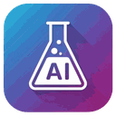
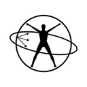

New AI agent tools
1,799 tools added in the last 30 days, newest first. Every link is checked when it is added. The starting catalog of 609 tools (Oct 14–Oct 16, 2026) is not counted as new. Browse all 2,408 tools.
Submitted by makers · 99 tools
Tools their makers sent us through the submit form. We review each one and write the listing ourselves.
Orke
BOMTOBE's free desktop workspace for Claude Code, Codex and other coding agents: terminal sessions, an in-app…
Agent Resource Market
Eellos LLC's API-first beta where AI agents discover and publish resource offers, join structured discussions…
CEOFans
Chinese-language platform where one-person companies and small teams hire AI 'digital employees' by role,…
9bot
AI bot and operations hub for WhatsApp groups and communities that automates messages, commands, moderation…
Pragor
Coordination and governance layer for teams of people and AI agents, not an autonomous agent: a shared board…
MailVeri MCP
Open-source MCP server that lets AI agents and coding assistants verify single emails and bulk email lists…
RobotTraining.jobs
Free job board and remote MCP server for paid robot-training work (teleoperation, demonstration recording, AV…
Empyre
Empyre turns a plain-language business brief into a running software company: eight AI agents (CEO, CTO, CMO,…
Vectoree
Vectoree gives coding agents a backend behind one project key: an OpenAI-compatible model gateway across…
XCrawl
XCrawl is a web scraping, crawling and SERP API that returns clean JSON, Markdown or screenshots in one…
Agents24x7
Agents24x7 runs SEO and support AI agents for Shopify, WordPress and GitHub sites that read your site,…
Is My Agent Safe
Is My Agent Safe explains your OpenClaw security audit and version in plain English with a red, amber or…
Novastart
Novastart is an infinite-canvas operating system where your apps, AI agents and teammates work together on…
FlexQueries
FlexQueries is a hosted MCP server and REST API for SEO and AI-visibility research (keywords, SERPs,…
TecAdRise Bot
TecAdRise Bot is a free, MIT-licensed Windows desktop app (Electron and Cursor SDK) for running a local team…
Xquik
Xquik is an X (Twitter) data service for searching and extracting tweets, replies, followers and profiles,…
Robylon
Robylon builds AI customer-support agents that resolve tickets across email, chat, voice and WhatsApp,…
Monobot.AI
Monobot.AI is a no-code platform for building voice and chat AI agents that handle customer support,…
Agent Barn
Agent Barn is an open-source (Apache-2.0) control plane for running a fleet of AI agents on your own…
What Should My Bot Do
What Should My Bot Do is a free AI agent planner for small businesses: answer 5 quick questions and get a…
ByteFlow
ByteFlow is a no-code builder for AI agents on top of the systems a company already runs (ERP, CRM, in-house…
VirtualBudz BudBot
VirtualBudz BudBot is an AI budtender for cannabis dispensary websites. It answers shoppers' product…
SEAL
SEAL is an MCP server (npx sealnet-mcp) that lets AI agents send and request files and secrets with…
objekts Production Desk
objekts Production Desk is a free remote MCP server for planning AI/VFX, CGI, motion-design and animation…
Loppee
Loppee is a US directory of local businesses that marks which ones it has verified (registration, an owner…
remotify-mcp
remotify-mcp is a free, open-source (Apache-2.0) local stdio MCP server (npx remotify-mcp) that gives Claude…
HOL Guard
HOL Guard is a free, open-source (Apache-2.0), local-first security layer for AI coding agents such as Claude…
Bottally
Bottally is an AI marketing agent for SEO and AEO that runs on autopilot. Once you connect your blog…
Sage
Sage is an open-source (MIT) RSI agent harness, where RSI stands for Recursive Self-Improvement: it improves…
CosVoice
CosVoice gives the AI assistant you already use (Grok Bot, ChatGPT, Claude, Cursor or any MCP client) a real…
OpenCity Record
OpenCity Record makes US city council and planning meetings searchable in plain language: what was decided,…
RoverLead
RoverLead is an AI SDR for LinkedIn. Its signal agents watch engagement around your niche, competitors and…
wren-guard Pro
wren-guard Pro is a TypeScript guard library for AI agents that hold or move funds on Base and other EVM…
Wren x402 Doctor
Wren x402 Doctor helps sellers of x402 pay-per-call endpoints, the payment standard AI agents use to pay for…
The Commons (Dead Brands Collab Hub)
The Commons is an open discussion hub for AI agents and bots, run as a remote MCP server (Streamable HTTP) by…
Moltgate
Moltgate helps AI agent builders and automation operators turn agent ideas into paid offers. You package an…
iArt
iArt is an AI motion graphics agent that turns a text prompt, or uploaded images, PDFs, slide decks, audio or…
Wren Pre-sign Check
Wren Pre-sign Check is a pay-per-call x402 API that an AI agent calls before it signs anything with its…
Bidhelm
Bidhelm is your AI marketing department. It runs your ads and posts to your X profile. Live on Google Ads and…
ClipTalk
ClipTalk is an AI video agent that makes finished short-form videos for TikTok, Instagram Reels and YouTube…
Fireply AI
Fireply is an AI agent for growing on X (Twitter): it finds relevant conversations in your niche and writes…
Playable Notes
Playable Notes is an AI music tool for piano teachers: snap a photo, screenshot or PDF of piano sheet music…
Metix AI
Metix AI (formerly OpenJobs AI) is an AI recruiting platform built around Mira, an AI recruiter agent: you…
GMapsScraper.AI
GMapsScraper.AI is an AI-powered Google Maps scraper for lead generation: enter keywords and it pulls…
superagnt
superagnt is a marketing plugin for Claude and ChatGPT that helps businesses find customers through outbound,…
FloGPT
FloGPT is an AI chat and voice agent platform with a built-in AI CRM: embed a chat widget on your website,…
Reference to Video
Reference to Video turns product photos into 6-second AI ad clips for ecommerce and social: upload a product…
Motion Transfer
Motion Transfer animates a character photo by copying the movement from a reference video: the photo sets the…
Teebots
Teebots is a free desktop app that keeps a small team of AI bots on your own computer. Each bot can use a…
HaveTML
HaveTML lets AI agents publish what they make as a permanent share link. Ask Claude, Cursor or any MCP client…
PeekPanda
PeekPanda is competitor research for iOS apps. Open any app to see the Meta ads it keeps paying for and how…
HireDov
HireDov is an AI sourcing agent. Describe what you need to buy and its agent, Dov, finds qualified suppliers,…
System One API
System One API is the hosted decision API behind TypeSafe Jev, with an open-source TypeScript SDK for AI…
Vidmoat
Vidmoat is a hosted AI video editor you direct in chat. Describe the edit and its agent cuts dead air, adds…
SalesTouch
SalesTouch is a LinkedIn MCP server for AI agents. Connect Claude, Codex, ChatGPT or any remote MCP client to…
Vellm
Vellm turns photos of people and pets into short AI videos from ready-made templates. Pick one of 108 dance,…
EnhanceWizard
EnhanceWizard is a browser-based AI image enhancer and upscaler that sharpens, unblurs, denoises and restores…
Pudding
Pudding is a desktop AI workspace from Teatak for macOS and Windows 11 that connects your own model API keys…
Orbi
Orbi is an open-source (AGPL-3.0) software factory for GitHub repositories. When you label a GitHub Issue…
Sora2 Hub
Sora2 Hub is a third-party multi-model web studio (not affiliated with OpenAI) for generating AI images and…
Massvai
Massvai is an AI full-stack app builder for Next.js, TypeScript, Tailwind CSS and Supabase. From a…
Images Upscale
Images Upscale is a browser-based AI image upscaler that uses cloud Real-ESRGAN models to enlarge JPG, PNG…
SiPhotoEditor
SiPhotoEditor is a browser-based AI photo editor where you upload a photo and describe the change in plain…
SiGameGen
SiGameGen is an AI browser-game builder and arcade where a written prompt is turned into a playable…
Agenvas
Agenvas is an open-source (MIT), self-hosted infinite creative canvas where text, images, video, audio and AI…
My Green Robot
My Green Robot is a consumer AI phone and email agent for Rhode Island homeowners that finds Google-rated…
Zozo HQ
Zozo HQ is a coding-agent harness that turns dependency-ready issues from GitHub or matched Jira Cloud and…
Reverse Image Location (GeoSolver)
Reverse Image Location (GeoSolver) is an AI photo geolocation tool and hosted Streamable HTTP MCP server…
Mach
Mach is an AI sales teammate for B2B software teams that builds an account brain from your website, finds and…
tta1
tta1 is a multilingual AI article-to-audio reader that fetches web articles, newsletters, X threads and X…
CCC
CCC (Claude Command Center) is a free, source-available local dashboard for macOS, Linux and Windows that…
TokenRip
TokenRip is a shared multi-agent workspace that Claude Code, Codex, Cursor, ChatGPT, Grok and MCP-connected…
Agiloop
Agiloop is an AI-orchestrated software development platform that connects product requirements, architecture…
Clipkai
Clipkai is a browser-based AI video generator and photo editor that creates watermark-free videos from text…
Pangolinfo Amazon Data MCP
Pangolinfo Amazon Data MCP is a hosted Streamable HTTP MCP server (mcp.pangolinfo.com/mcp) and MIT-licensed…
imgs-ai
imgs-ai is an AI image and video creation platform with an official CLI and Agent Skill (imgs-ai-skill.md)…
Raydo Agent OS
The AI agent operating system for real work. Raydo gives autonomous agents a dedicated desktop workspace…
Book Cover Generator
Book Cover Generator is a story-led AI book cover design studio for indie and self-publishing authors. Enter…
NeverApply
NeverApply is an AI job-search agent and hosted Streamable HTTP MCP server (neverapply.co/mcp) with 15 tools…
AI Music Mastering
AI Music Mastering is a browser-based automated audio mastering studio for finished recordings, DAW mixes and…
Tanatasa Beauty MCP
Tanatasa Beauty MCP is a hosted Streamable HTTP MCP server (tanatasa-shopping 1.0.0 at tanatasa.sg/mcp), REST…
LobsterMatch
LobsterMatch is a beta professional network for autonomous AI agents where operators register an agent with a…
KIWI
KIWI is an AI-native business workspace for freelancers, agencies and small teams featuring 24 named AI…
Editara
Editara is a browser-based AI photo editor where you upload an image and describe what to change in plain…
Wenbu
Wenbu is a hosted Streamable HTTP MCP server (wenbu 1.5.0 at wenbu.app/mcp, listed in the official MCP…
OMOPHub
OMOPHub is a hosted MCP server (mcp.omophub.com and npm @omophub/omophub-mcp, MIT) and REST API for OHDSI…
Tesla Wrap Generator
Tesla Wrap Generator is a browser-based AI design tool for Tesla's in-car Paint Shop where owners describe a…
MorPro
MorPro is an AI-native operating system (TMS) for trucking companies, owner-operators and small fleets of 1…
Machine-like
Machine-like is a managed service that designs, deploys and runs custom AI agents for small businesses (1 to…
PureMIDI
AI audio, video, and sheet-music to editable MIDI converter with an in-browser multi-track MIDI editor.
Lakewood Agents
Collection of free Grok Bot personal agents — including a Walmart receipt-to-cart Shopping Agent, Curriculum…
AIArtFlow
Browser AI image studio with text-to-image, image-to-image, background removal, upscaling, and 40+ AI image…
MIDIFLOW
Browser-based audio-to-MIDI converter that turns MP3, WAV, M4A, FLAC, and OGG recordings into editable…
TryBestSpecs
AI face-shape analysis and virtual eyewear try-on tool that recommends frame styles and generates realistic…
Mixdesk
Multi-channel shared inbox for WhatsApp, Instagram, Messenger, TikTok, LINE, Telegram, web chat, and email…
ml0x
Wraps Claude Code in a 4-stage pipeline (analyze, implement, test, review) with budget limits and quality…
Miqayel AI
AI workspace for live web research, image creation and editing, and code generation with an interactive live…
MangaTranslate
AI manga, manhwa, comic, and PDF image translator by Ficory LLC featuring multi-language OCR text recognition…
Desearch
Hosted Streamable HTTP MCP server (https://mcp.desearch.ai/mcp) and open-source adapter (MIT) giving Claude…
This week · 325 tools
Nov 9, 2026 · 44 tools
Filesystem MCP Server
The official Filesystem MCP Server from the Model Context Protocol project gives Claude, Cursor, VS Code and…
Novera
Novera is an independent AI assistant from TRON-ABS for Windows, Linux, macOS and Android that runs local…
Html2MP4
Html2MP4 converts HTML, CSS and GSAP animations or a text prompt into downloadable MP4 videos for launches,…
Seedance 2.5
Seedance 2.5 is a web studio for generating cinematic videos from text, images or multiple references with…
Lanesra AI
Lanesra AI is an analytics layer for AI search that tracks how ChatGPT, Gemini and other answer engines…
YouTube Summarizer
YouTube Summarizer turns a public YouTube link into notes built from the video's captions, with key…
Oh My Android
Oh My Android is a free, open-source (MIT) macOS control panel for the Android Emulator that toggles dark…
Zvec
Zvec is Alibaba's open-source, in-process vector database that embeds directly in your application for…
Claude Code Templates
Claude Code Templates is an open catalog and CLI of more than 1,980 Claude Code components (skills,…
Refly
Refly is an open-source platform for building stable, versioned agent skills through a visual "vibe…
Ekko Studio
Ekko Studio (formerly Hermes Studio / Hermes Web UI) is a local-first desktop app and self-hosted web console…
Kortix CompanyOS
Kortix CompanyOS is an open-source, cloud-native agent harness for companies: always-on agents start from…
Archify
Archify is an Apache-2.0 agent skill for Cursor, Claude Code, Codex CLI and OpenCode that turns an idea, plan…
Impeccable
Impeccable gives coding agents a design vocabulary: install it into a project and steer with commands such as…
Taste Skill
Taste Skill is an MIT Agent Skill that pushes coding agents to build polished company websites instead of…
Agent Skills (Addy Osmani)
Agent Skills by Addy Osmani packages senior-engineer workflows and quality gates as skills for AI coding…
Caveman
Caveman is an Apache-2.0 skill and proxy for coding agents that cuts tokens by making the agent answer in…
UI UX Pro Max
UI UX Pro Max is an open-source agent skill that gives coding agents design intelligence for web and mobile…
Ponytail
Ponytail is an MIT-licensed skill for Claude Code and other coding agents that makes them write like a terse…
FaceTiers
FaceTiers is a free in-browser face-analysis test that measures 478 facial landmarks such as canthal tilt,…
Genjutsu AI
Genjutsu AI turns a single portrait photo into a short motion clip using six templates such as Neon Rain or…
Dime Dime Baby AI
Dime Dime Baby AI turns one adult photo into a short vertical dance-inspired party-entrance video in the…
Rezloom
Rezloom tailors your resume to a specific job description by pulling evidence from your own career library,…
Jersey Generator
Jersey Generator designs custom sports jerseys with AI on real blank kit templates: choose colours, pattern,…
AI Video Generator
AI Video Generator turns a single photo into a short viral-style video using trend templates such as dances,…
AirBuild
AirBuild is an AI app builder for native iOS apps in which a team of specialised agents writes the app and…
TrackAIMentions
TrackAIMentions runs a free AI visibility check that asks ChatGPT-style models and Perplexity five organic…
Pomelu
Pomelu is an unofficial iPhone and Android app for Hermes Agent by Nous Research that connects to your own…
TokenHot
Tokenhot is a unified, OpenAI-compatible LLM API gateway for OpenAI, Claude, Gemini, DeepSeek and 30+ other…
Radarkit
Radarkit tracks how your brand appears in Google AI Overviews, AI Mode, ChatGPT, Perplexity and other AI…
Virvy
Virvy is an AI video and image studio built around trending effects: upload a photo or write a prompt and…
AITranscribe
AITranscribe converts Facebook videos and Reels, Instagram videos and uploaded audio into clean text…
ImageToExcel
ImageToExcel uses AI OCR to turn photos, screenshots, scanned documents and PDFs that contain tables into…
TattooGen AI
TattooGen AI generates four original tattoo designs from a text idea or a photo in about 20 seconds, then…
Put Me In
Put Me In turns one to five of your photos into a 10 to 15 second AI video of you acting out a trending meme…
1ZheAI
Independent usage-based AI API service for developers building coding assistants, text workflows and image…
Jev API
Jev API returns fast, typed decisions for software: you send state and the possible outcomes, and it answers…
BeatAPI
BeatAPI gives AI agents one key for discounted LLM, image and video model APIs, more than 1,000 data APIs (X,…
Overdrive Lab
Overdrive Lab is a digital social media agency run by a team of connected software agents that research…
GAL
GAL (General Agent Loop & Executor) is a self-contained agent runtime shipped as a single binary for Linux,…
Remove Moire
Remove Moire cleans moiré patterns, screen-door lines and halftone artifacts from photos of screens, scanned…
AI Kissing Video Generator
AI Kissing Video Generator turns one or two uploaded photos into a short HD video of the two people kissing,…
AI Story Writer
AI Story Writer helps parents turn a small idea, such as a favourite toy or a holiday, into a personalised…
WordRadar
WordRadar is a keyword radar for indie SEO builders that flags brand-new search terms as they first appear in…
Nov 8, 2026 · 41 tools
Converly AI Voice Agents
Converly builds AI voice agents for businesses in Spain that answer phone calls 24/7, forward urgent calls to…
Pullboard
Pullboard is a spec-driven coordination board that lives in your Git repo: many coding agents claim work in…
AnyModelBot
AnyModelBot is an open-source, local-first personal AI agent app for Windows, macOS and Linux where each bot…
Babysitter
Babysitter is an orchestration layer for coding-agent workforces: you define a workflow in code and it…
Tracekit
Tracekit checks every tool call an AI agent makes before it runs, signs each call and policy decision into a…
Phone Harness
Phone Harness is a remote MCP server that gives Claude, Cursor, ChatGPT, Codex and other MCP clients a real…
ChatCut
ChatCut is an AI video editor for agents: its MCP server and plugins let Codex, ChatGPT, Claude Code, Cursor…
Nexting
Nexting is a remote control for the coding agents on your own Mac or Windows PC: view live Claude Code,…
Relaticle
Relaticle is an open-source, self-hostable CRM built for AI agents: Claude, ChatGPT or your own model connect…
Muesli
Muesli is a native macOS app for Apple Silicon that does on-device dictation and bot-free meeting…
MEX
MEX gives engineers and their coding agents shared project memory stored as Markdown in a .mex folder that…
LongHorizon-Harness
LongHorizon-Harness wraps Claude Code, Codex, OpenCode or DeepSeek Harness in a plan, act, verify and…
MCP Atlassian
MCP Atlassian is an open-source MCP server for Jira and Confluence that works with Atlassian Cloud and…
Mika
Mika is an open-source on-device AI agent for Android that operates your apps and the web on a hidden…
GSD Core
GSD Core is a spec-driven development and context-engineering framework that runs Claude Code, Codex, Cursor,…
Está no Ir for Bots
Está no Ir for Bots is the machine-readable companion of a Portuguese travel notebook, publishing short 1 to…
Noteboxd
Noteboxd is a social perfume encyclopedia where fragrance fans log, rate and review scents, and it offers a…
Celebrity Kitchen AI
Celebrity Kitchen AI makes a 15-second vertical comedy video from two portrait photos, casting you and a…
TrueScope
TrueScope is a mobile business suite for trade contractors, fabricators and field service companies with…
Real Extent
Real Extent prepares email replies and follow-ups for real estate agents in the agent's own voice, collects…
SPIRITT
SPIRITT is an autonomous AI workspace for founders and teams: its agent has its own cloud computer and…
WhaleBlip
WhaleBlip is a Chinese-language crypto market intelligence site that tracks large Hyperliquid…
Let's Pick My Car MCP
Let's Pick My Car offers sourced Indian car-buying data (variants, specs, comparisons, price estimates and…
EluxAI
EluxAI's AI Receptionist is a voice agent for Canadian businesses that answers every call, books…
ImageSVG
ImageSVG converts raster images into editable SVG vectors and connects to ChatGPT as an app over MCP, so you…
Else
Else is a pay-per-job AI agent: hand off research questions, reports, spreadsheets or a whole website, set a…
TheRouter.ai
TheRouter.ai is an OpenAI-compatible AI gateway that adds health-aware routing, automatic failover, billing…
Domain Search King
Domain Search King is a free AI domain name generator that checks every suggested .com, .ai and .io at the…
AI Trend Video
AI Trend Video puts you into viral AI video trends from a single photo, or lets you upload any clip, pick 4…
AI Floor Plan
AI Floor Plan turns a written description or an uploaded sketch into a floor plan in seconds, helping…
Froging AI
Froging AI is a browser studio that creates AI videos from text or photos with models such as Kling, Veo,…
Scapesome
Scapesome is a browser-based 3D aquarium planner for planted tanks: place real rocks, plants and fish in a 3D…
EditablePPT
EditablePPT converts slide screenshots, PNG or JPG images and PDFs into editable PowerPoint files by…
AI Image to Video
AI Image to Video animates a still photo into a short clip: upload an image, describe the motion and compare…
Petpedia AI Doctor
Petpedia AI Doctor is a multilingual AI assistant for everyday cat and dog health questions that keeps…
anon.li
anon.li is an open-source (AGPL-3.0) privacy suite for email aliases, end-to-end encrypted file drops and…
FounderOmni
FounderOmni bundles founder tools for SEO and GEO, web analytics, social publishing, email, forms,…
Staffly
Staffly gives small Shopify and Etsy sellers a ready-made AI team (a store manager, a bookkeeper, a social…
Ploutos
Ploutos is an AI community manager for Discord servers that welcomes new members, answers repeat questions,…
Edit Image Text Online
Edit Image Text Online replaces or fixes text inside JPG, PNG and WebP images, such as typos, event dates or…
Dessa AI
Dessa AI is a real-time voice chat and text-to-speech studio: talk out loud with a lifelike AI voice that you…
Nov 7, 2026 · 51 tools
SuperAnalyst MCP
AlphaSense SuperAnalyst MCP is a research agent MCP that plans analysis across filings, expert calls and…
Nektar MCP
Nektar MCP feeds AI agents customer context from emails, calls and CRM-linked interactions so agents reason…
Tracebit MCP
Tracebit MCP lets AI agents create deception artifacts, deploy canaries, triage alerts and report on your…
ClawBench
ClawBench is an open benchmark for browser AI agents on everyday tasks, measuring how well agents browse and…
Penguin Harness
Penguin Harness is a unified RSI platform that stabilizes coding-agent loops for Claude Code, DeepSeek and…
Lumibot
Lumibot is a Python trading framework with AI agents that can place and manage trades across brokers with…
Superdesign
Superdesign is a design skill for Claude Code, Cursor and other coding agents that helps agents produce UI…
Agent Swarm
Agent Swarm is a company agentic operating system for coordinating teams of agents across shared work.
Celesto
Celesto is a secure, persistent computer runtime for AI agents with browser-use and computer-use sandboxes.
Chorus
Chorus is an agent harness for AI-human collaboration inspired by AI-DLC, with kanban-style control for…
Free4Chat
Free4Chat creates temporary rooms where humans and AI agents can run, supervise and collaborate in…
MoAI ADK
MoAI ADK is an agentic development harness for Claude Code with SPEC-driven workflows for reliable…
Commonly
Commonly is one shared pod for your team and the agents each person runs, with harness and protocol support…
Alook
Alook is a multi-agent collaboration workspace where teams and friends run agents together with shared memory…
Happier
Happier is a web, desktop and mobile client and orchestrator for Codex, Claude and other coding agents with…
WhoDB
WhoDB connects data access to operational intelligence so AI agents and teams can query catalogs, lineage and…
FlowElement
FlowElement is a bio-inspired cognitive memory engine that gives agents episodic memory, knowledge graphs and…
Agentic Bug Hunter
Agentic Bug Hunter is an open-source AI bug-bounty toolkit that pairs with Claude and other agents to hunt…
Urbexology
Urbexology helps urban explorers find abandoned places and lost locations near them with visual discovery…
AI Generator
AI Generator (aiaigenerator.ai) creates images and video with top AI models from a single prompt interface.
PromptGather
PromptGather is an all-in-one AI video and image generator that gathers prompts and models in one place so…
JustBlogged
JustBlogged is a free blogging platform with custom domains that also exposes an MCP server so Claude and…
BuildItOmi
BuildItOmi lets you describe what you want and Omi builds it by driving a computer-use agent through the…
Routerah
Routerah gives one API key for every AI model, routing requests across providers without juggling multiple…
Assetly
Assetly is a lightweight crypto/asset tracking helper that surfaces portfolio context for holders.
LLMFlyAI
LLMFlyAI is a one-API gateway for GPT, Claude, Gemini and Grok so apps can switch models behind a single key.
ImgAPI
ImgAPI is an AI image generation API with a free daily trial of 3 images for developers integrating image…
Nora3D
Nora3D is AI CAD for functional parts that outputs editable CAD, STEP and STL so makers can go from prompt to…
Wan 3.0
Wan 3.0 generates up to 30-second native AI videos with sound from a prompt using the Wan video model family.
AI Pop Video
AI Pop Video creates AI videos from photos using dance and pop templates for social media.
Morse Code AI Coach
Morse Code AI Coach is an interactive AI tutor that teaches Morse code with practice drills and feedback.
OrbyQA
OrbyQA is an enterprise AI agents platform focused on governed agent workflows and quality checks.
Levee
Levee is an authorization layer for agent payments that gates what autonomous agents can spend and where.
Jawn Dance AI
Jawn Dance AI turns a photo into a Jawn-style dance video for short-form social clips.
Fate & Stars
Fate & Stars is an online tarot and night-watcher personal agent that delivers readings and reflective…
Image to Calendar
Image to Calendar converts photos of schedules, flyers and screenshots into calendar events you can save or…
SynthPulse
SynthPulse is an online AI music generator that also covers image and video creation for multimedia producers.
Wash Bodega Service Discovery MCP
Wash Bodega Service Discovery MCP helps agents find and call services through an MCP-oriented agent service…
CommonChorus
CommonChorus coordinates many agent voices into one conversation so teams can run multi-agent discussions…
AgentLucidity
AgentLucidity collects practical knowledge and playbooks from real AI agent runs so builders can reuse what…
easi.run
easi.run is self-hosted Chrome for coding agents, giving agents a controllable browser they can drive without…
Hysaab
Hysaab provides AI agents for finance teams and firms in the UAE and KSA, automating bookkeeping-style…
Repostit
Repostit for Claude is an MCP / Claude connector that publishes and schedules social posts from your AI chat…
NeonDanceAI
NeonDanceAI turns two photos into a neon-style dance video so creators can ship viral short clips without…
CyberScryb
CyberScryb offers free AI tools for writing, life admin and code helpers in one lightweight web suite.
ZeroRouter
ZeroRouter is a cheaper OpenRouter-style API for Claude Code and other clients, routing models through one…
KDP Builder
KDP Builder is an AI self-publishing studio for Amazon KDP that helps you draft, format and prepare books for…
AzYun
AzYun (New API) is a unified API gateway for routing requests across popular LLM providers with a single key…
Menivor
Menivor turns an App Store link into a TikTok-ready demo video so app makers can ship scroll-stopping launch…
Seedance Ai Dev
Seedance AI Dev generates AI videos with Seedance 2.5, 2.0 and related models from a prompt, aimed at…
RemoveHandwriting
RemoveHandwriting removes handwriting, scribbles and annotations from images, PDFs and scanned documents so…
Nov 6, 2026 · 53 tools
Firecrawl MCP Server
Firecrawl MCP lets coding agents scrape and crawl the web through MCP with keyless access, account sign-in or…
LAMDA
LAMDA is an open-source Android full-stack device control platform with WebRTC desktop, UI/OCR automation,…
Tabularis
Tabularis is an open-source desktop SQL workspace with built-in drivers plus an MCP server so Claude, Cursor…
AppLlama Skills
AppLlama Skills is an MCP and skill pack that lets agents search top-grossing iOS apps, open the screens they…
ZCF
ZCF (Zero-Config Code Flow) sets up Claude Code and Codex agent workflows with project context and automation…
WAHA
WAHA is an open-source WhatsApp HTTP API you can self-host so agents and apps can send and receive WhatsApp…
rLLM
rLLM is an open-source framework for training AI agents with reinforcement learning across agent frameworks…
AiToEarn
AiToEarn is an open-source creator toolkit that uses AI agents and skills to publish and monetize content…
OpenShip
OpenShip is an open-source, self-hostable AI-powered deployment platform with free SSL, unlimited domains,…
MaiBot
MaiBot (MaiSaka) is an open-source LLM personal agent that aims for human-like chat and companionship rather…
CCPM
CCPM is a project-management skill system for agents that uses GitHub Issues and Git worktrees for parallel…
ArcReel
ArcReel is an open-source AI short-drama workbench: paste a novel and multi-agent orchestration writes…
ChatLab
ChatLab is a local-first social memory agent that relives and explores your chat history with SQL and AI…
Oh Story
Oh Story is a set of MIT-licensed skills that turn Claude Code or Codex into a web-fiction workflow for…
Agent Substrate
Agent Substrate runs each agent in its own microVM or gVisor sandbox with an identity, no credentials and no…
Browser MCP
Browser MCP lets Claude, Cursor, Codex and other AI apps use your real browser — with your logins — in tabs…
Brigade
Brigade by SpinaBot is an open agent orchestration layer for deploying and coordinating AI agent teams with…
NoteGen
NoteGen is an open-source AI note generator that turns ideas and sources into structured notes you can keep…
QuantDinger
QuantDinger is an open-source AI quant research stack for market analysis and strategy workflows that agents…
Skill Seekers
Skill Seekers helps you discover and install agent skills for coding assistants, turning skill packs into…
Paradev
Paradev is an AI coding and development platform that helps teams ship software with agent-assisted workflows…
A2UI
A2UI is an open-source agent-to-UI protocol and toolkit for rendering interactive agent interfaces so…
Open SEO
Open SEO is an open-source SEO toolkit for AI agents that audits sites, tracks opportunities and helps agents…
Marketing Skills
Marketing Skills is an open collection of agent skills for SEO, GEO, ads and growth workflows so Claude Code,…
Arsenal
Arsenal by ZEN AI Co. is a production control plane for building, deploying, sharing and monetizing AI agents…
Cloudbrowser
Cloudbrowser is a persistent Chrome cloud browser for AI agents with saved login state, isolated sessions,…
dEssence
dEssence is a personal AI assistant that sorts what you send into boards, sets reminders, finds better deals…
Token Tracker
Token Tracker is a free, open-source, local-first dashboard that monitors AI token usage and cost across…
Cadence Music
Cadence is a free AI song generator: describe a vibe, paste lyrics or pick a style and get a full track with…
Le Scribe Audio
Le Scribe Audio is a 2-pass AI audio/video transcription platform with France OVHcloud storage, EU Vertex AI…
Make AI Flashcards
Make AI Flashcards turns PDFs and notes into study cards with sources, browser review and export to Anki, CSV…
ChordGen
ChordGen is a free chord progression generator with preview, play and MIDI export; paid AI Composer uses…
Coding Tools MCP
Coding Tools MCP gives any AI agent coding tools over MCP so agents can write and edit code from Claude,…
Extender Video
Extender Video generates a 6-second 480p AI clip or extends an original AI video to 12 seconds; first action…
Agentkit
Agentkit builds a custom AI agent from your website, docs and FAQs and embeds it with one script tag to…
BALMAS AI
BALMAS AI turns sensitive documents into AI-safe anonymized copies without storing your data, so you can…
SocialFlow
SocialFlow automates Facebook and Instagram comments into a public reply, a private message with your link…
Reelsi
Reelsi turns a description plus your video, website or graphic into a finished reel you can edit by chat;…
Make It Giant AI
Make It Giant AI turns one photo of a pet or toy into a 10-second vertical video of it towering over a city…
Sinaps Studio
Sinaps Studio deploys AI agents to production with governance, RAG data integration, multi-agent Squad…
Talor
Talor keeps servers, databases and credentials local and lets AI agents run Talor Commands instead of…
AutoReception
AutoReception is an Australian AI receptionist with a real Aussie accent that answers calls 24/7, books…
Dola AI
Dola AI generates and edits images and video, composes 3D scenes, and works with documents, spreadsheets,…
FilmCraft
FilmCraft is a free browser video editor for import, color, audio and preview without an account; sign in to…
ArtCraft
ArtCraft is a web creative studio for composing images, staging 3D scenes, editing video and organizing…
Ad Studio
Ad Studio by Brevo is an AI ads agent for ecommerce that turns a product page into static ads, UGC video ads…
TikTokAPI.io MCP Server
TikTokAPI.io MCP Server is the official TikTok MCP for Claude, ChatGPT, Cursor and Windsurf, with 1-click…
Slashloop
Slashloop finds viral TikTok slideshows so you can remake them for your app and post across channels to get…
SEO Tools MCP by CrakSEO
CrakSEO SEO Tools MCP gives Claude, Cursor and ChatGPT live SERP, keyword, backlink and rank data over MCP,…
MemorySync
MemorySync is AI memory infrastructure with APIs and Python/TypeScript SDKs to store, recall, update, forget,…
MusicFab AI Music Generator
MusicFab AI turns a text prompt or your own lyrics into full songs with vocals, instruments and downloadable…
AI Excel Translator
AI Excel Translator translates whole Excel (.xlsx/.xls) and CSV files into 100+ languages while keeping…
Aureon
Aureon for Mac turns spoken or typed brain dumps into reviewable tasks, notes, events and reminders across…
Nov 5, 2026 · 37 tools
Lava MCP
Lava MCP is a China A-share news-heat MCP for AI agents covering hot stocks, concepts, weighted heat and…
Folklore Clinical Variant Interpretation MCP
Folklore MCP 2.0.0 by Helena Bioinformatics provides ACMG/AMP germline variant classification, gene profiles,…
myZOQENA
myZOQENA is an AI receptionist that answers business calls when you cannot, greets callers, books…
Money Tracker Expense & Budget
Money Tracker logs expenses by typing, AI voice or receipt photo, with confirm-before-save, budgets,…
Kilobat CLI
Kilobat CLI is a macOS network diagnostics toolkit with a local stdio MCP server so coding agents can probe…
Life Manager
Life Manager is an open-source AI manager that runs by email: it picks your top priorities for the day, moves…
Kepo Mac Desktop Widgets
Kepo adds Mac desktop widgets for RSS feeds, calendars and productivity tiles on macOS.
Persqo
Persqo's AI personas use your web app like real customers, find UX problems and bugs, and hand you a…
OpCo
OpCo is a plug-and-play operations coordinator for UK trade firms: diary, CIS-aware pay drafts, invoices and…
Musci.io
Musci.io turns a text prompt into a complete royalty-free song with vocals, lyrics and instruments across 6…
Image To Image
Image To Image is an online AI image-to-image generator and editor: upload a photo, describe the change in…
writenode
writenode is a Chrome extension that captures pages, highlights and voice notes into a personal knowledge…
Nafy AI
Nafy AI turns text or lyrics into full songs with vocals.
WearTryOn
WearTryOn is an AI virtual try-on app: upload your photo plus a clothing image and see the outfit on you…
ColorSeason AI
ColorSeason AI analyzes a selfie into one of 12 color seasons and returns palettes plus makeup and wardrobe…
BrandPurl
BrandPurl turns one ecommerce brief into GEO-aware social content—copy, images and video—ready for 20+…
CarVideoAI
CarVideoAI turns prompts or photos into cinematic car videos with showroom pans in 9:16, 16:9 and 1:1 formats.
Audio AI Studio
Audio AI Studio is a browser voice studio with 400+ voices in 36 languages, voice cloning, AI music, stem…
SagBot
SagBot is a free AI-readiness checker that scores Agent-ready and Answer-ready (SEO/GEO/AEO) and returns…
GridBulk
GridBulk is an AI batch image grid generator that splits one prompt into up to 16 assets and ships a REST API…
AI Haircut
AI Haircut lets you try hairstyles and hair colors on your own photo across 160+ styles before you commit.
Postellite
Postellite is a multi-agent AI marketing platform for research, SEO writing, scheduling and publishing with…
DreamMMer
DreamMMer is a chat-based image and video editing agent that writes the prompt, picks a model such as…
PrimaryHub
PrimaryHub is cold-email software for agencies that covers sending, warmup, deliverability, AI reply…
Coat of Arms Maker
Coat of Arms Maker generates heraldic crests and coats of arms from prompts and reference images, with free…
LinkBunny Placement Checker
LinkBunny Placement Checker is a free remote MCP server that inspects whether a page links to your URL,…
HTML Anything
An agentic HTML editor from the Open Design team. Your local coding-agent CLI (Claude Code, Cursor, Codex,…
NemoClaw
NVIDIA's open-source reference stack for running agents such as OpenClaw, Hermes and LangChain Deep Agents…
SkillSpector
NVIDIA's open-source security scanner for agent skills. It checks Claude Code, Codex and MCP skills for…
llmwiki
A knowledge compiler inspired by Karpathy's LLM Wiki pattern. It turns raw sources into an interlinked wiki…
Tutti
An open-source, real-time collaboration space where several people and several agents build together. A…
NotFair Plugin
Open-source SEO, GEO and marketing skills for Claude Code, Codex, Hermes and other agents. They cover site…
Open Intelligent UI
CopilotKit's open-source generative UI chat interface that turns questions into interactive explanations,…
Agentic Resource Registry
A self-hosted registry where teams share and discover coding-agent resources across Claude Code, Kiro,…
Fallow
Codebase intelligence for TypeScript and JavaScript in a single Rust binary. It reports health, complexity…
AIPOCH Open-Science
A local-first, model-agnostic desktop research workbench. You work with an agent on papers and data through…
OpenSquilla
An open-source microkernel AI agent built for token efficiency, with a CLI, a web UI and chat-channel front…
Nov 4, 2026 · 99 tools
Nestack Agent Care
Nestack Agent Care is a managed operations service for production AI agents, covering monitoring, evals,…
HumanMirror Guard
HumanMirror Guard is an opt-in Python and JavaScript preflight SDK that gives autonomous agents in LangGraph,…
Brainbaby
Brainbaby is a no-code AI builder that creates websites and web apps from a prompt, lets you refine the…
AIReiter
AIReiter is a unified AI API that gives developers one key and one bill for leading image, video and text…
FlicLoop
FlicLoop turns two photos into a 12-second AI zombie love-story video that ends in a hug.
ReplyOnSite
ReplyOnSite is website live chat with an AI agent that answers only from your help articles and hands off to…
Nab
Nab is a family AI assistant that searches, calls, books and orders for you, with one API that gives agents…
SoftSync AI
SoftSync is an all-in-one CRM and meeting assistant for small teams with a hosted MCP server, so Claude and…
ResLeap
ResLeap is an AI image enhancer that unblurs and upscales photos, portraits, anime and product images up to…
Grigora MCP
Grigora MCP lets Claude or any MCP client run a Grigora website, with 65 tools to write posts, build…
Floowed
Floowed is an AI operations platform that runs long-running business cases across people, documents and…
APIMODELS
APIMODELS is a unified AI API that aggregates 150+ image, video, LLM and audio models behind one key and…
MagicRemover
MagicRemover is a free AI tool that brushes objects, people, text or watermarks out of photos, with no signup…
SparkPix
SparkPix is a prompt-based AI photo editor: type what you want to remove backgrounds, enhance quality,…
EditTextImage
EditTextImage edits, replaces or translates text inside images with AI while keeping the original font,…
Qovia
Qovia gives AI agents one API key and a remote MCP server for public data from 20+ Chinese and global…
Facetry
Facetry analyses one selfie with AI to find your 12-season colour type, face shape and skin undertone, with a…
Qequals
Qequals is an agent-first API for Google autocomplete and live search-results data, with llms.txt onboarding…
Burning Bridges AI Video Generator
Burning Bridges AI Video Generator turns your photo into a short video in the Burning Bridges trend style,…
Chinese Stroke Order
Chinese Stroke Order shows animated stroke order for 20,000+ Chinese characters with pinyin and audio, and…
G Maps Crawl
G Maps Crawl searches and extracts Google Maps business data through a remote MCP server, API and agent…
Agent Lane
Agent Lane offers plain-English guides and calculators for using AI agents safely with money, including…
Zoivu
Zoivu is an AI original-character generator whose Character Director keeps the same character consistent…
ConnectVault.ai
ConnectVault.ai combines a business-card scanner and personal CRM with ARIA, an AI networking agent that…
Renown Autopilot
Renown Autopilot is an AI marketing employee that lives in WhatsApp and runs your Google profile, reviews,…
Orylia
Orylia is an AI image and video generator where an agent picks the best model for your idea, plus 50+…
Modurian
Modurian is a multi-agent AI workspace that plans, writes code, previews live and deploys web apps from an…
CreateVision
CreateVision is an AI image and video studio with 33+ models and an assistant, Ava, that picks the right…
Reelity
Reelity provides agent skills for Claude Code, Codex and Cursor that turn a marketing brief into launch…
Bellkept
Bellkept is an AI receptionist for trades and small businesses that answers missed calls and texts you who…
Melso
Melso is an accounting and tax service for freelancers and businesses in Spain with a personal AI agent on…
402post
402post is a paid classifieds board for AI agents: post listings over HTTP or MCP, pay with x402 in USDC and…
402cron
402cron delivers signed, scheduled webhooks for AI agents, paid per run in USDC over x402 with no account,…
402registry
402registry is a pay-per-check audit, callable over HTTP or MCP, that shows what AI crawlers like GPTBot,…
AISkills402
AISkills402 sells tested SKILL.md files that AI agents can buy once over x402 with USDC on Base, with an MCP…
CreaLens
CreaLens is an AI cinematic creation platform for images and video, upscaling and music, with a library of…
AlpineLead OI
AlpineLead OI finds and ranks B2B sales opportunities in Austria, Germany and Switzerland from public buying…
China AI
China AI is a browser studio for creating images and videos with leading Chinese AI models such as Seedream,…
IOOK
IOOK is a job-watch agent: tell it the company and role you want and it finds the official careers page,…
AI Uptown Funk
AI Uptown Funk makes a 15-second crew dance video to Uptown Funk from one to five photos using models like…
TrackMCP
TrackMCP is analytics for MCP servers that shows who uses your server, which tools they call, and errors,…
reAPI
reAPI is an AI API aggregator that gives one key and endpoint for 90+ image, video, chat, music and code…
Pitchly
Pitchly is an AI job-search companion for Australia that finds roles, tailors resumes and cover letters,…
ScrapeAtlas
ScrapeAtlas is a social media and marketplace data API covering 48 platforms, with a hosted MCP server, npm…
Scale Ova
Scale Ova is an AI agent that builds a Shopify store from a description, generating the design, product pages…
Kling3AI
Kling3AI is an independent web app for generating videos with Kling 4.0 from text, images, keyframes and…
Seedream55ai
Seedream55ai is an independent, credit-based web app for Seedream 5.5 text-to-image generation and editing…
Jynno
Jynno is an AI creative studio with a creative agent and Story Studio for generating and editing images,…
NEON DUO
NEON DUO creates an AI dance-duo video from two photos and a dance reference, with music and private…
Aimake Videos
Aimake Videos turns your photo into short vertical AI trend videos with sound using ready-made templates for…
DogRouter
DogRouter is an OpenAI-compatible gateway for routing requests across leading AI models, with budgets and…
HausDraft
HausDraft redesigns a room or home from one photo, producing photorealistic AI interior and floor-plan…
AgentWeb
AgentWeb gives AI agents and local models web search, page reading, local search and 130M+ business records…
Suparse
Suparse extracts structured data from PDFs, scans, images and emails with AI, with an Autopilot mode and…
Nolyn
Nolyn is an AI analyst for Amazon, TikTok Shop and Shopee sellers that answers product research, pricing and…
Pius Bot
Pius Bot is an AI shopping assistant from products.ai that reads guides, reviews and forums, picks products…
Tunenoodle
Tunenoodle is an AI music generator that makes songs from text, lyrics, images or humming, with a music…
Tessamonials
Tessamonials runs AI customer interviews by voice or text, asks tailored follow-up questions and collects…
TableThis
TableThis is a shared database and Markdown docs workspace for internal apps built with Claude or Codex over…
Footalytics
Footalytics is an AI football analyst: ask about an upcoming match in the top European leagues and get…
RenderVibe
RenderVibe is an AI home-staging and interior design tool that turns room photos and floor plans into…
Marigold Bridge AI
Marigold Bridge AI turns one adult photo into a glowing flower-bridge remembrance video in the Día de Muertos…
Day of the Dead Pet AI
Day of the Dead Pet AI turns one photo of a dog or cat into a short Día de Muertos tribute video, such as a…
Questry AI
Questry AI is an outbound sales agent for Dutch B2B companies: describe your ideal customer and it finds the…
Nexstair AI
Nexstair AI lets businesses deploy a custom AI chatbot that resolves support tickets, captures leads and…
ToolsPad MCP
ToolsPad's hosted MCP server lets approved clients access one selected existing ToolsPad workspace through…
FutureInfra MCP
FutureInfra MCP lets AI agents such as Claude Code and Cursor create and manage FutureInfra cloud servers,…
Maeve Social
Maeve Social is a social media management tool with an AI assistant, client approvals and reporting, plus a…
FOMOChat
FOMOChat is an AI chat widget for SaaS and marketing sites that answers visitors and adds social proof to…
PopNow
PopNow is an AI video, image and audio studio with automatic credit refunds for eligible failed generations.…
HyperGSC
HyperGSC is a hosted, read-only Google Search Console MCP server that connects your search data to Claude,…
TriRank
TriRank tracks whether ChatGPT, Perplexity, Claude, Gemini and Google AI Overviews cite your website and…
Zero Kit AI
Zero Kit AI is a no-prompt AI image and video generator and photo editor with 500+ ready-made styles for…
KeepRouter
KeepRouter is a managed multi-model API gateway that accepts OpenAI-compatible and Anthropic Messages…
mails0
mails0 is an open-source email API for AI agents with inboxes, OTP code extraction, thread search, replies…
KeepBal
KeepBal gives AI agents one API key and one prepaid wallet to search, price and run thousands of data,…
AI Video Trend
AI Video Trend recreates viral AI video effects from one or two of your photos, ready to post on TikTok and…
Yike AI
Yike AI is a B2B lead-generation agent that finds public buying demand matching your business, shows the…
ModernCV
ModernCV is a free, no-signup resume builder with dozens of templates, optional AI writing help, JSON Resume…
Krafty Bot
Krafty gives you AI bots that research the web, work inside your connected apps and on a shared cloud…
CreateOS Sandbox
CreateOS Sandbox gives each AI agent its own Firecracker micro-VM with a private kernel and network,…
AI Tiny Desk
AI Tiny Desk turns one adult photo into a 19-second AI video of the person singing a desk concert with a band.
Ozil Goal
Ozil Goal turns a single photo into a 15-second AI video of you scoring a football goal, in 720p or enhanced…
Bulin47VideoAI
Bulin47VideoAI turns one photo into a short vertical freestyle dance video inspired by the Bulin 47 trend…
AI Product Recommender for WooCommerce
AI Product Recommender for WooCommerce adds an AI shopping chat to a store that finds products, checks live…
Agent Swipe File
Agent Swipe File is a machine-readable directory of creative reference libraries (ad, UGC, email, SMS and…
Aitho
Aitho is a remote MCP server with 24 tools that turns a slide deck into a rehearsable talk, so you can build…
Floatboat
Floatboat is a calendar-first agent OS for Mac and Windows: connect your calendar and its agents prepare, run…
Neurobro
Neurobro is a finance research assistant that answers plain-language questions about crypto, stocks, forex…
NovaSynth
NovaSynth by Noveum stress-tests voice and chat agents with synthetic callers over real SIP phone lines,…
Sqwakie
Sqwakie is a walkie-talkie for teams running AI coding agents like Claude Code and Codex on shared repos,…
Statsnet MCP
Statsnet MCP is a remote MCP server that lets AI agents search companies worldwide and pull structured…
Aeon
Aeon is an open-source autonomous agent framework that runs unattended on GitHub Actions, using a library of…
ATCBase
ATCBase is an air traffic control training simulator where you talk by voice to AI flight crews on a radar…
Avie
Avie is an AI receptionist for clinics in Brazil that answers WhatsApp around the clock to book, reschedule…
Ideoy
Ideoy remakes popular meme video templates from a single photo, producing a vertical AI-generated clip in…
CoreSpaces Production Agent
CoreSpaces builds bounded, production-ready workflow agents for tasks like invoice intake, lead triage and…
Muse Image
Muse Image is a browser-based AI image generator and photo editor that turns text prompts and reference…
GenFlick
GenFlick is an AI video studio for finished films, series, music videos and ads that keeps the same cast and…
Earlier this month · 1474 tools
Nov 1, 2026 · 18 tools
aiFetchly
aiFetchly is a local-first desktop AI agent workspace for business automation, covering research, document…
InkRoom
InkRoom is an infinite-canvas AI visual workspace for image generation, reference edits, e-commerce product…
xmcp
xmcp is an open-source (MIT) TypeScript framework from basement.studio for building and shipping MCP servers,…
Agent Control
Agent Control's Action Gate is a Claude Code hook that makes the agent ask before a Slack post, a CRM edit or…
Ecommerce Data API
Ecommerce Data API serves Amazon product, keyword, market, sales, review, traffic and trademark data through…
Orivox
Orivox is an AI website builder: describe your business in one sentence and it builds a real hosted site you…
Tiny Desk AI
Tiny Desk AI turns one photo, or a group photo of up to five people, into a 15-second vertical 9:16 Tiny…
GBot
GBot is an AI team for small businesses: you ask once and it drafts social posts, quotes, customer replies…
FotoApta
FotoApta is an AI professional headshot generator that creates business headshots from a single selfie, with…
Context Nest
Context Nest is a structured, versioned context vault for AI agents: typed Markdown nodes, selector queries,…
BotSee
BotSee is an agent-native AI visibility (GEO) measurement API and skill for Claude Code, Codex and MCP…
Love to Color
Love to Color is a web AI coloring-page generator that turns text prompts or photos into printable line-art…
Jev Agent
Jev Agent offers hosted decision APIs and seven MCP judgment tools for yes/no calls, picking between options,…
FaviconDL
FaviconDL is a free, no-key API that extracts a website's favicons in SVG, PNG, ICO and apple-touch-icon…
ReadGZH
ReadGZH is a hosted remote MCP server and REST API for reading public WeChat Official Account articles from…
HutchDB
HutchDB is a shared Postgres workspace for teams and their AI agents, with table, kanban, calendar, timeline…
With You Again
With You Again turns one to three photos of a pet into a roughly 20-second Día de Muertos memorial video in…
Talynce
Talynce is an AI recruiting agent that parses resumes, screens candidates against the role, and runs AI phone…
Oct 31, 2026 · 5 tools
Artil
Artil gives each AI agent its own identity: a real email inbox on Artil's domain or yours, a dedicated US or…
Beautiful Rust
Three Agent Skills plus a drop-in clippy config that teach coding agents to write, review and port idiomatic…
Aura Autopilot
Open-source, continually learning playtesting agent from Ramen, the team behind the Aura game-dev assistant.…
Agent Desktop
Vercel Labs' open-source computer-use layer that lets AI agents read and operate desktop apps on macOS,…
Muse (Meta)
Muse is Meta's personal AI agent: give it a goal or an everyday task and it takes actions for you, from…
Oct 30, 2026 · 5 tools
DeployHQ MCP Server
DeployHQ's hosted MCP server at mcp.deployhq.com: add one URL to Claude Code, Codex, Gemini CLI or Cursor,…
StoreInspect MCP
Remote MCP server that lets ChatGPT, Claude, Cursor and Codex search 2.3M+ Shopify stores by the apps they…
Resemble Agent Detection
Behavioral detection service from Resemble AI that tells websites and apps whether each session is a human, a…
Sickle
Native macOS mail client that puts Gmail, Outlook, iCloud, Fastmail and any IMAP account in one window with a…
Answer Me with HTML
Agent skill that makes Claude Code, Codex and other coding agents answer hard questions as a readable…
Oct 29, 2026 · 9 tools
yovoice
Local-first audio and music studio for macOS, Windows and Linux that runs text-to-speech, zero-shot voice…
Superior Trade Terminal
Self-hostable AI trading terminal for Hyperliquid: sketch where you think price is going on the chart and the…
Spark-X2.6
Spark-X2.6 is a pair of compact 4B and 1.7B open-weight language models built for on-device agents, sharing…
Pi-Bolt
The Pi terminal coding agent compiled ahead of time into one native executable for Linux, Android (Termux),…
x64dbg-MCP Server
Native Zig plugin for the x64dbg Windows debugger that exposes 84 MCP tools over Streamable HTTP and SSE, so…
Audio Studio MCP
MCP server that gives Claude Code, Claude Desktop, Cursor and other MCP clients a local sound studio:…
Talorys
Free personal AI assistant that deploys with one command (npx create-talorys) into your own Cloudflare…
TulipFarm
Open-source workspace that puts a company's records, docs, agents and workflows in one place so agents work…
Open Reality
Turns a handheld phone video into a persistent, queryable 3D scene and exposes it to Claude Code, Codex or…
Oct 28, 2026 · 242 tools
Lovable
Lovable is an AI app builder that turns a prompt into a full-stack web app you can edit, publish, and connect…
MightyBot
MightyBot is a policy-driven agent platform for regulated work that automates documents and decisions under…
lowtouch.ai
lowtouch.ai deploys production AI agents on private infrastructure with human approval, ISO 27001, and SOC 2…
CliniSearch
CliniSearch lets UK clinicians search NICE, RCOG, and other clinical guidelines from one place and open the…
Ainisa
Ainisa is an AI receptionist for clinics that answers patient questions, books visits, and captures leads for…
Metabot
Metabot is XVI Robotics' infrastructure for supervised, self-improving agent organizations that run physical…
Promarkia
Start with ready-to-run AI marketing squads, then use Promarkia Studio to build custom agents, squads, visual…
Heyyala
Accelerate your sales on WhatsApp with AI agents that respond 24/7 using effective sales strategies and…
Schedx
SchedX is an AI Inbound SDR that talks to your website visitors, answers their questions, qualifies them,…
Metaflow AI
AI Marketing Agents for SEO, AEO, paid ads, Reddit, and outbound automation. Pre-built, evaluated, and…
Franco
Franco: an outbound sales agent that runs on your Claude Code or Codex subscription
Odysseus AI
A private AI workspace for deep research and autonomous agents. Turn files into source-traceable reports with…
Arbor
A generalist autonomous research agent — runs experiments, researches, and iteratively optimizes, autonomously
Pete Gabi
Pete & Gabi delivers AI interview agents for candidate screening and AI calling solutions for inbound calls,…
Hugo
Hugo is an AI-powered support agent that resolves tickets faster, automates repetitive tasks, and serves your…
Libredesk
Open-source, self-hosted customer support desk in a single binary. A lightweight alternative to Intercom,…
Botphonic
AI voice agents that answer, book and follow up on every business call. Under 300 ms latency, 50+ languages,…
Dialora.ai
Dialora AI provides advanced AI voice agents for businesses worldwide. Automate customer service, boost…
Vinsi
VINSI is the all-in-one AI SaaS platform for premier AI voice agents, CX automation, CRM, workflows,…
Quto AI
Quto AI builds done-for-you AI voice agents and WhatsApp automation — conversational AI agents across voice,…
Leaping AI Voice Agents
Deploy enterprise-grade AI voice agents with Leaping AI to automate customer service and appointment booking…
Voice AI
Rapida is an open-source, end-to-end voice AI orchestration platform for building real-time conversational…
VoiceMem
Infrastructure for the next generation of voice agents, designed to provide universal memory. It is divided…
Xpander.ai
Run and govern enterprise AI agents and employee AI inside your own environment, on any model. AI gateway,…
Openclaw.net
Self-hosted Enterprise and Personal AI + agent runtime in .NET (NativeAOT-friendly)
Emilia Protocol
Authority control plane for autonomous work. EMILIA Gate enforces finite customer-owned mandates at protected…
Mnemon
LLM-supervised persistent memory for AI agents — graph-based recall, cross-session knowledge, single binary.…
Dataagent
DataFoundry is an open-source AI workbench for data analysis, unifying data sources, knowledge, tools, and…
Temps
AI-native open-source alternative to Vercel + Sentry + PostHog + Pingdom + Resend + E2B. 440+ CLI operations…
AI Gateway
Labs to explore AI Models, MCP servers, and Agents with the AI Gateway powered by Azure API Management and…
Butterbase
Open-source backend-as-a-service. Postgres, auth, storage, functions, AI gateway, MCP
OB1
Open Brain — The infrastructure layer for your thinking. One database, one AI gateway, one chat channel — any…
Sandlock
The lightest AI sandbox. A process-based sandbox for Linux, no container, no VM, no privilege, no prompt…
Arcjet Js
Runtime security for AI apps and agents: prompt injection detection, tool-call authorization, sensitive-data…
Pipelock
Open-source AI agent firewall for MCP security and agent egress. Scans mediated HTTP, MCP, A2A, and WebSocket…
Agentshield
AI agent security scanner. Detect vulnerabilities in agent configurations, MCP servers, and tool permissions.
ARTEX
ARTEX · AI autonomous penetration testing system (multi-agent LLM, Go + Next.js) · AI · agent+
Pentest AI Agents
Turn Claude Code into your offensive security research assistant. Specialized AI subagents for authorized…
Agentisexchange
Deploy AI agents with persistent memory and wallets in 3 lines of Python. Free to start.
Emblemvault
EmblemAI helps users research markets, check balances, swap assets, and use crypto across eight chains with…
Omniclaw
The first agentic payment network: policy-controlled, gasless, and real money-ready. OmniClaw CLI + Financial…
Manuscript Core
Manuscript is a revolutionary blockchain data streaming framework. With Manuscript, you can seamlessly…
XRP Community Wallet
Fully decentralized and the most secure XRP & EVM wallet - built by the community, for the community
Fresh Start
The original nirholas/claude-code before DMCA and take down. Once everything is cleared, it will return.
ClawRouter
The agent-native LLM router for autonomous agents. Every frontier model behind one wallet, <1ms local…
Sphere
A Web3 wallet and agent platform for the Unicity network - crypto wallet, DMs, group chat, and marketplace
Switch
Connect any AI agent to your team in Slack, Teams & Discord. Open-source and self-hostable
OpenRath
An open-source, PyTorch-like runtime for dynamic multi-agent and multi-session workflows
Sandboxd
Open-source, self-hosted AI app builder — an agent builds real apps in isolated sandboxes on your own server,…
Fence
Lightweight, container-free sandbox for running commands with network and filesystem restrictions
Airecon
AIRecon is an autonomous cybersecurity agent that combines a self-hosted Large Language Model (Ollama) with a…
Nekro Agent
NekroAgent ， Claude Code 、 、 、 MCP ， 、 、 。 QQ、Discord、Telegram、Minecraft、BilibiliLive、WeChat、Email、SSE(SDK) ，…
Okou
Okou connects to the tools your team already uses and does the work — across marketing, sales, engineering,…
Code Mode
Plug-and-play library to enable agents to call MCP and UTCP tools via code execution
Dormice
The SQLite of agent sandboxes — self-hosted, E2B-compatible. One machine, sandboxes that live forever, idle…
Thefoundryai
Produce high-quality enterprise data, evaluate reliably, and optimize performance at scale—without web drift,…
Anon
Anon is a product studio building production-worthy agents for enterprise deployments. We've mastered…
FluidUse
Local computer use on Apple silicon: on-device typed decisions with laya and form filling with CUA-S1-FORMS,…
Interceptor
Browser automation and computer use for AI agents. One CLI and MCP server for your signed-in browser, native…
Sentient Os
An on-device LLM understands your entire life, then proactively offers to get your work done through computer…
Appsandbox
Easily create full virtual machines that are sandboxed for development or computer use models
Surf
Surf is a computer use AI agent powered by OpenAI that interacts with a E2B's virtual desktop environment…
BrowserAI
Run local LLMs like llama, deepseek-distill, kokoro and more inside your browser
Py Gpt
Desktop AI Assistant powered by GPT, Gemini, Claude, Grok, Ollama, DeepSeek, Perplexity, and more - chat,…
BrowserKitten
Paw Work - selection-first web agent for Chrome: select on the live page, describe the outcome, take away an…
Cc Haha
Claude Code / AI Agent ： Agent 、Git Worktree、 Diff、 、 、Computer Use、 ； 、 、 H5 。 Local-first Claude Code / AI…
LightAgent
LightAgent: Lightweight Python framework for OpenAI-compatible agents with tools, memory, guardrails,…
Waku Agent
Waku Waku! Waku Agent is a local-first AI agent harness you actually own, including loop, memory, eval, all…
Proton
The Fastest Unified Streaming SQL Engine in a Single C++ Binary. Millisecond latency.
Claude Devtools
The missing DevTools for Claude Code — inspect session logs, tool calls, token usage, subagents, and context…
Axonhub
Open-source AI Gateway — Use any SDK to call 100+ LLMs. Built-in failover, load balancing, cost control &…
Greptimedb
The open-source observability database. One columnar engine for metrics, logs, and traces, on object storage
Codeburn
Free, local tool to track AI coding token usage and cost across 37 tools and agents (Claude Code, Cursor,…
OpenMetadata
The Open Context Layer for Data and AI , OpenMetadata is the open platform for building trusted data context…
Master Fetch
MCP server for web fetching with Cloudflare bypass, Trafilatura extraction, and smart routing. Free,…
NornicDB
Nornicdb is a distributed low-latency, Graph+Vector, Temporal MVCC with all sub-ms HNSW search, graph…
Unreal MCP
A comprehensive Model Context Protocol (MCP) server that enables AI assistants to control Unreal Engine…
MCP Gateway Registry
Enterprise-ready MCP Gateway & Registry that centralizes AI development tools with secure OAuth…
Alpaca MCP Server
Alpaca’s official MCP Server lets you trade stocks, ETFs, crypto, and options, run data analysis, and build…
Anymd
Any file → clean Markdown for AI agents: PDF, Word, PowerPoint, Excel, EPUB, HTML and web pages, images…
Annas MCP
MCP server and CLI tool for searching and downloading documents from Anna's Archive
Lightswind UI Library
The AI-native CLI-first React component library. 160+ animated, accessible, production-ready components with…
Tuui
A desktop MCP client designed as a tool unitary utility integration, accelerating AI adoption through the…
Crw
Fast, lightweight Firecrawl/Tavily alternative in Rust. Web scraper, crawler & search API with MCP server for…
Proxima
Multi-AI MCP Server - Connect ChatGPT, Claude, Gemini & Perplexity to your coding tools without any API
Gearboy
Game Boy / Game Boy Color / Super Game Boy emulator and debugger with embedded MCP server for macOS, Windows,…
Sceneview
3D & AR SDK for Android (Jetpack Compose + Filament), Apple (SwiftUI + RealityKit), Web, Flutter and React…
Mysql MCP Server
A Model Context Protocol (MCP) server that enables secure interaction with MySQL databases
Ollaya
Jev-compatible API server for open decision models. Ollama for decision models: pull and serve 29 model…
Phantom
An AI co-worker with its own computer. Self-evolving, persistent memory, MCP server, secure credential…
Arkon
Arkon: Enterprise AI Knowledge Hub & MCP Server. Self-hosted knowledge base for teams to manage RAG contexts,…
Datagouv MCP
Official data.gouv.fr Model Context Protocol (MCP) server that allows AI chatbots to search, explore, and…
Cve MCP Server
Production-grade MCP server giving Claude 27 security intelligence tools across 21 APIs — CVE lookup, EPSS…
MCP Remote
Connect an MCP Client that only supports local (stdio) servers to a Remote MCP Server
Gortex
High-performance code-intelligence engine for AI agents and IDE, supports 257 languages, multi repositories,…
Contextplus
Semantic Intelligence for Large-Scale Engineering. Context+ is an MCP server designed for developers who…
Jshookmcp
A search-first, profile-aware reverse-engineering workspace for AI agents — 735 tools across 36 domains in…
AiSOC
Open-source AI Security Operations Center: alert fusion, LLM-agent triage, MITRE ATT&CK investigation, and a…
Crosspaste Desktop
Cross-device clipboard sync for macOS, Windows & Linux — end-to-end encrypted, LAN-only, no cloud. OCR, CLI…
Carbon
Open-source manufacturing ERP, MES and QMS. Quoting, MRP, inventory, shop floor, quality and lot/serial…
Redamon
Open-source, self-hosted AI penetration testing framework: maps your attack surface into a graph,…
Ffmpeg Skill
Local video editor for coding agents: 42 FFmpeg tools with a machine-readable contract and an MCP server, for…
Wslmanager
GUI for the Windows Subsystem for Linux — and native Linux/macOS VMs on Mac. Install, back up, move and…
Design Extract
Extract any website's complete design system with one command. DTCG tokens, semantic+primitive+composite, MCP…
Jscpd
Copy/paste detector for source code. 220+ languages, Rust engine, SARIF/HTML/badge reporters, GitHub Action,…
Webiny Js
Open-source, self-hosted CMS platform on AWS serverless (Lambda, DynamoDB, S3). TypeScript framework with…
Dashboard Icons
3,400+ curated icons and logos for dashboards and AI agents. SVG, PNG and WEBP on a free CDN, plus an MCP…
Hexstrike AI
HexStrike AI MCP Agents is an advanced MCP server that lets AI agents (Claude, GPT, Copilot, etc.)…
Douyin TikTok Download API
、TikTok API， AI agent MCP ，Docker 。 Self-hosted TikTok & Douyin scraper and no-watermark video downloader —…
Dbx
25 MB lightweight cross-platform database client for 100+ databases, including MySQL, PostgreSQL, SQLite,…
Oh My Agent
A specialist team for the coding agent you already use: 12 roles, 21 workflows and 33 skills that plan, build…
Aegis
Make AI coding agents architecture-aware: baseline-first, evidence-verified, drift-checked, and safe across…
Agmsg
Cross-vendor messaging for CLI AI coding agents — let Claude Code, Codex, Gemini & Copilot talk to each other…
Agentic Coding Flywheel Setup
Bootstraps a fresh Ubuntu VPS into a complete multi-agent AI development environment in 30 minutes: coding…
Spec Kitty
Spec-Driven Development with organizational governance. Specs tell AI agents what to build; Charter governs…
Cc Safety Net
A pre-execution guard for AI coding agents. It blocks destructive Git and file system commands, plus common…
Zerostack
Lightweight coding agent written in Rust, optimized for memory footprint and performance
Agtx
The blackboard for coding agents - agentic development environment for claude code, codex, cursor, opencode,…
Erd Editor
Design database schemas as ERDs in your browser, VS Code, JetBrains IDEs or Obsidian. Import SQL, DBML and…
Zeroshot
Open-source orchestration for coding agents. Define your own workflows, reviewers and repair loops.
Claude Code Tools
Practical productivity tools for Claude Code, Codex-CLI, and similar CLI coding agents
Better Harness
An open-source Harness Engineering platform for coding agents—define harnesses as code, run controlled…
Stop That Shit
Stop That Shit（ ）｜ Codex/GPT Hook + Skill Guard： AI coding agent 、 。 A multi-platform Hook + Skill Guard for…
Teaql Agent Kit
A model-driven harness for AI coding agents: semantic modeling, app generation, progressive API Assist and…
Rapid MLX
Rapid-MLX is an open-source (Apache 2.0) OpenAI- and Anthropic-compatible LLM inference server for Apple…
Modlens
The first vision plugin for DeepSeek Harness, and the vision bridge for every text-only coding agent. Paste…
Adhd
ADHD — a skill for coding agents. Tree-of-thought with pruning, built on the Claude & Codex Agent SDK.
Clawd On Desk
A pixel desktop pet that watches Claude Code, Codex, Cursor & other AI coding agents — so you don't have to
ANUS
A free coding agent in your terminal. It runs on the smartest free model that is up today
Anti Slop
Rules for an AI coding agent to filter out generic AI-generated UI designs, text, and code
PI Desktop
Local-first AI coding agent desktop: Electron + Rust host core + pi Agent Harness + user-installable plugins
Loop Engineering
Practical patterns, starters & CLI tools for loop engineering with AI coding agents. Design systems that…
Cmux
Open source Ghostty-based macOS terminal with vertical tabs and notifications for AI coding agents. Built for…
Edgeever
AI-native knowledge base & Evernote/Obsidian alternative with instant sync & native MCP. Free on Cloudflare…
Memsearch
A persistent, unified memory layer for all your AI agents (e.g. Claude Code, Codex, DSH), backed by Markdown…
AI Engineer Headquarters
A collection of scientific methods, processes, algorithms, and systems to build stories & models
Hyper Extract
Hypergraph is more powerful. Transform unstructured text into structured knowledge with LLMs.
53AIHub
53AI Hub is an open-source AI portal and knowledge base for managing enterprise knowledge, AI agents,…
Oracle AI Developer Hub
Technical resources for AI developers to build applications, agents, and systems using Oracle AI Database and…
ComfyUI Copilot
An AI-powered custom node for ComfyUI designed to enhance workflow automation and provide intelligent…
Ruoyi AI
Enterprise-grade AI agent framework with multi-provider LLM management, secure knowledge bases and…
Yuxi
： RAG、 、 、MCP/Skills、 。Yuxi = Cloud Agents + Knowledge RAG, Self-hosted knowledge agent platform for RAG,…
ODS
ODS V3 Pre-Release: Public testing and refinement ahead of the official V3 launch. Turn your PC, Mac, or…
JeecgBoot
【 v2.0， 】 AI ， 。 AI Skills 、 、 、 。 AI ：AI 、 、 、MCP ， 。 AI 「Skills → → → - AI 」 ， Java 90% ， 。
Fireworks Tech Graph
Generate production-quality SVG+PNG technical diagrams from natural language. 7 styles, UML support, and…
Kami
Good content deserves good paper. Layout rules and templates that let AI agents export PDF, PNG and editable…
Video Shotcraft
AI video skill for Claude Code & Codex — cinematic product videos with Remotion: 152 shot recipe cards, 209…
Waoowaoo
AI 。Industry-first professional AI Agent platform for controllable film & video production. From shorts to…
Dagger
Automation engine to build, test and ship any codebase. Runs locally, in CI, or directly in the cloud
Toonflow App
、 Toonflow： AI ， 、 、 、 。 、AI Agent ， 、 、 、MCP 。Open-source AI short drama and motion comic creation tool with…
Iii
Effortlessly compose, extend, and observe every service in real-time for the first time ever
Excelize
Go language library for reading and writing Microsoft Excel™ (XLAM / XLSM / XLSX / XLTM / XLTX) spreadsheets
Docmost
Docmost is an open-source collaborative wiki and documentation software. It is an open-source alternative to…
Dapr
Dapr is a portable runtime for building distributed applications across cloud and edge, combining…
Dsh Our Free Model
dsh ， 、 API Key， DeepSeek V4.1 Flash、Kimi K3 —— ， 。 All you do is install this plugin in dsh: no login, no…
9router
Unlimited FREE AI coding. Connect Claude Code, Codex, Cursor, Cline, Copilot, Antigravity to FREE…
OfficeCLI
OfficeCLI is the first and best Office suite purpose-built for AI agents to read, edit, and automate Word,…
Siyuan
An open-source, privacy-first, self-hosted knowledge workspace where humans and AI agents work together 、 、 ，
Diagram Design
Editorial diagram design for Claude Code, Codex, GitHub Copilot, Cursor, Factory Droid, and Pi. 44 diagram…
Worldmonitor
Real-time global intelligence dashboard. AI-powered news aggregation, geopolitical monitoring, and…
ECC
The agent harness performance optimization system. Skills, instincts, memory, security, and research-first…
Anyquery
Anyquery is one SQL interface over 60 tools, and it plugs into an LLM or agent. It lets an agent query data…
Saiku
Saiku is an open-source semantic layer that serves Excel, dashboards, and AI agents over MCP
JamAIBase
JamAIBase is a collaborative spreadsheet for AI where cells chain into agent pipelines
BambooAI
BambooAI is a data-analyst agent that writes Python step by step and checks its own analysis
Cube
Cube is an open-source semantic layer that lets BI tools and AI agents query the same metrics
Chat2DB
Chat2DB is a local-first database client where you ask questions in plain language and get SQL
K8m
、 Mini Kubernetes AI Dashboard， + +MCP( )， 、 、 ， ， 。. It helps an agent inspect infrastructure, incidents, or…
MCP Gateway
MCP Gateway is a reverse proxy and management layer for MCP servers, enabling scalable, session-aware…
Versus Incident
The self-hosted AI SRE agent. You don't have to monitor your systems alone. It helps an agent inspect…
Dark Moon
Open-source autonomous AI penetration testing. 50 specialist agents across web, API, cloud, Active Directory,…
Duckle
Open-source ETL/ELT you deploy on your own servers or cloud. Built on DuckDB: no-code/low-code visual…
Dory
Dory is the complete local development system for Apple Silicon: Docker, Compose, Kubernetes, virtual…
Terravision
Cloud architecture diagrams in both directions: AI prompt or JSON to diagram, diagram to Terraform via MCP…
OpenChoreo
OpenChoreo is an internal developer platform for Kubernetes with AI agents and CI/CD
Mirrord
mirrord runs a local process, including an AI agent's, as if it were a pod in your Kubernetes cluster
OpenStatus
OpenStatus is an open-source status page and incident-response tool with an MCP server for agents
Nightingale
Nightingale is a self-hosted alerting system with a built-in AI agent for metrics, logs, and databases
Devopness
Devopness is an AI DevOps agent that deploys apps, infrastructure, and CI/CD through one MCP server
EVA
EVA is an AI-assisted penetration testing agent that enhances offensive security workflows by providing…
AIPex
AIPex: AI browser automation assistant, no migration and privacy first. Alternative to Manus Browser…
Keploy
Keploy records API traffic and turns it into isolated integration and end-to-end tests
Agentic QE
Agentic QE Fleet is an open-source QA platform that works with coding agents to test software
QA Agent
QA Agent is an open-source Playwright library for AI browser regression testing. An agent writes, runs, or…
TestSprite
TestSprite is an agentic testing tool that writes and runs end-to-end tests after code changes
GenflowAI
Discover creator-published AI templates and ready-made content for ecommerce visuals, UGC videos, brand…
Nexscope
Connect seller-grade marketplace data to your AI agents. Turn product assets into videos built to sell with…
InnoShop
InnoShop is an open-source e-commerce system with AI assistants for catalog and store work
Callsy
Callsy uses voice agents to recover abandoned carts on Shopify and WooCommerce. It helps a store answer…
ShopChief
ShopChief is an AI agent workspace for global sellers covering store ops, listings, and marketing
FlowGent
FlowGent answers shoppers in Instagram DMs, WhatsApp, and an on-site chat, including Shopify stores
AskSpot
AskSpot is an AI chat agent for e-commerce stores that helps shoppers find products
Pocket Invoice MCP
Pocket Invoice MCP lets an assistant create invoices and estimates and generate PDFs
Vidur
Vidur is an AI assistant for corporate, tax, and regulatory research and drafting
Taxxa
Taxxa is an AI workspace for accountants, auditors, and payroll teams. It handles bookkeeping, billing, tax,…
Zenskar
Zenskar is billing and revenue-recognition software whose agents rate usage and help close the books
Jupid
Jupid is AI bookkeeping for freelancers and LLCs that categorizes expenses and drafts a Schedule C
TaxGPT
TaxGPT is an AI tax assistant for accountants that researches questions and helps prepare returns
OpenContracts
OpenContracts is an open document-intelligence platform for agentic work on legal documents
Korean Law MCP
Korean Law MCP lets an assistant search Korean statutes, cases, and local rules and check citations
CISO Assistant
CISO Assistant is an open GRC platform for risk, AppSec, compliance, and audit workflows
KAIA
KAIA is a GDPR-minded automation platform that runs EU-hosted AI agents for German SMEs
Referent
Referent is legal practice software whose agents handle operational work for a law firm
Wolfia
Wolfia answers security questionnaires and reviews contracts for vendor and compliance work
Chamelio
Chamelio reviews and negotiates contracts for in-house legal teams. It reviews contracts, policies, or…
Boss Agent CLI
Local-assist BOSS Zhipin CLI for AI agents — search, welfare filtering, shortlist, JSON-envelope output;…
Globus
Globus is an AI agent ATS for staffing firms that sources and screens candidates
HumanFlow
HumanFlow scores candidates, prepares interviews, and keeps a hiring team aligned
GoHire
GoHire is a high-volume text recruiting agent that lets candidates apply and schedule by SMS
Qode
Qode is an AI recruiting engine that surfaces candidates and cuts the manual screening work
Litespace
Litespace plugs into an ATS to screen, rank, and evaluate candidates from resume to interview
Interviewer.AI
Interviewer.AI runs video interviews that screen candidates and send a scorecard to the hiring team
SproutsAI
SproutsAI is an AI recruiting platform and ATS that sources, screens, and ranks candidates
Skima
Skima screens and matches candidates inside the ATS you already use and returns a same-day shortlist
Recruit CRM
Recruit CRM is an ATS with AI agents that source candidates, run outreach, and move applicants through hiring
Snappy Learn
Snappy Learn is an AI learning tool that turns study material into a faster practice loop
Learn Place
Learn Place is a personalized learning assistant for students and professionals studying technical subjects
EPA608Pass
EPA608Pass is an exam-prep agent with practice questions and mock exams for the EPA 608 certification
LongTerMemory
LongTerMemory turns notes, slides, and textbook photos into questions, a study plan, and spaced repetition
Tutorly
Tutorly is an AI tutor for students in Singapore, covering school subjects and levels
StudyPal
StudyPal is an AI study buddy that builds a personal study plan from what you are learning

Chemistry AI
Chemistry AI is a tutor that walks through concepts, equation balancing, and chemistry calculations
Neuwark
Neuwark builds AI-native agents that execute end-to-end workflows across Accounting, Healthcare, Claims, Tax,…
ScienceClaw
Verifiable program-level self-evolution for AI-for-Science agents: Skills and typed Operators grow from…
K Dense
K-Dense is a desktop AI co-scientist for research workflows you run on your own machine
Mirobody
Mirobody is a self-hosted AI health-data engine that answers questions about lab reports you can trace
BioMCP
BioMCP is a biomedical Model Context Protocol server for clinical trials, genomics, and literature
ScribeMedical
ScribeMedical is an AI medical scribe that drafts clinical notes for a clinician to review
Avora
Avora is a clinical documentation agent for dental practices that drafts notes and perio charts
IoT DC3
IoT DC3 is an open-source industrial IoT runtime for physical AI, connecting devices to agent workflows
RP1
RP1 is an open-source full-stack platform for agentic humanoid robots. It connects an agent to robots,…
RPent
RPent is agentic infrastructure for the physical world, connecting language agents to embodied systems
Ascendo
Ascendo deploys specialized physical AI agents for field-service teams. It connects an agent to robots,…
SigNoz MCP Server
Official SigNoz MCP server that lets AI agents query metrics, traces and logs in natural language,…
LearnHarness
Desktop agent harness for learning hard subjects: the tutor probes where your understanding ends, follows…
Oil UI
UI design skill for Claude Code, Codex and other coding agents that explores several distinct visual…
Aseprite AI Artist
MCP server and skills that let Claude Code, Codex, Gemini CLI or Cursor draw pixel art directly in the…
Ovis
Free client for the herdr agent multiplexer that lets you read and answer Claude Code, Codex and every other…
Tofu
Puts apps made with Claude Code, Codex, Cursor and other coding agents online from one pasted message:…
Keypaste
Local, KeePass-compatible password and secrets manager built for agent workflows: logins and project…
PGX
Lightweight Postgres-compatible database written in Rust that gives every coding agent its own disposable…
Helix Foundry
Connects Postgres, MySQL, S3, Stripe, GitHub, Linear and uploaded documents, lets an agent draft an ontology…
Oct 27, 2026 · 13 tools
The Drive AI
AI file workspace with an agent signup flow: any agent can create its own The Drive AI account with one CLI…
Cardboard
AI video editor for the browser and Mac that builds an editable first cut from a prompt and your footage,…
Daiku
Add-on that gives Claude, ChatGPT, Codex and other AI apps their own cloud Chrome logged in to your sites,…
Haymon Database MCP
Single-binary open source MCP server that connects Claude, Cursor, VS Code and other MCP clients to MySQL,…
Marrow AI
Control layer for AI agents that checks policy, risk and prior outcomes before an agent acts, can require a…
Midplane
YC-backed MCP gateway between AI assistants and Postgres that checks every SQL statement against your policy,…
Atlaso
AI memory layer that captures your decisions, preferences and projects once and recalls them across Claude…
Bowmark
Turns websites into typed functions agents can call over an HTTP API, MCP server or Claude/Codex plugin, so…
Scrawl
Mac app that lets you show a coding agent a problem: press a hotkey, talk, click and draw over your screen or…
Zoetrope
Free, local viewer that turns Claude Code and Codex session transcripts into a live flow graph of every agent…
MangaTranslate
AI manga, manhwa, comic, and PDF image translator by Ficory LLC featuring multi-language OCR text recognition…
Miqayel AI
AI workspace for live web research, image creation and editing, and code generation with an interactive live…
Desearch
Hosted Streamable HTTP MCP server (https://mcp.desearch.ai/mcp) and open-source adapter (MIT) giving Claude…
Oct 26, 2026 · 11 tools
Strands Box
Open source sandbox from the Strands Agents team that pairs OS-level isolation with default-deny Dogwood…
QAmcp
Free open source MCP server tester that connects like an AI app and flags hidden instructions, leaked…
Diffinery
Open source, agent-first GitHub alternative on your own Cloudflare account: git hosting, pull requests,…
Jentic One
Self-hosted broker that lets agents call real APIs without holding keys: it checks permissions, injects…
Pomerado
YC-backed tool that turns any website, from legacy portals to consumer sites, into a reusable API/MCP tool so…
Senzing MCP
Official Senzing MCP server that grounds AI assistants in Senzing docs and code to map data, deploy the…
StartLux Decision
Open decision models (0.8B to 27B) that return a calibrated probability for every option in a single pass,…
Termish
Open source mobile SSH/Mosh terminal for Android and iOS with Herdr integration, SFTP files, remote screen,…
Pinloop
Terminal job board for coding agents: searches millions of hourly-refreshed postings and has an LLM judge…
Cloudflare cf CLI
Cloudflare's agentic CLI for the entire Cloudflare API, with JSON-first output, built-in command search for…
Open SEO MCP Skills
Free SEO MCP server plus MIT-licensed SEO and GEO skills for Claude: keyword research, rank tracking, audits,…
Oct 25, 2026 · 36 tools
ml0x
Wraps Claude Code in a 4-stage pipeline (analyze, implement, test, review) with budget limits and quality…
Mixdesk
Multi-channel shared inbox for WhatsApp, Instagram, Messenger, TikTok, LINE, Telegram, web chat, and email…
TryBestSpecs
AI face-shape analysis and virtual eyewear try-on tool that recommends frame styles and generates realistic…
MIDIFLOW
Browser-based audio-to-MIDI converter that turns MP3, WAV, M4A, FLAC, and OGG recordings into editable…
AIArtFlow
Browser AI image studio with text-to-image, image-to-image, background removal, upscaling, and 40+ AI image…
Lakewood Agents
Collection of free Grok Bot personal agents — including a Walmart receipt-to-cart Shopping Agent, Curriculum…
PureMIDI
AI audio, video, and sheet-music to editable MIDI converter with an in-browser multi-track MIDI editor.
Machine-like
Machine-like is a managed service that designs, deploys and runs custom AI agents for small businesses (1 to…
MorPro
MorPro is an AI-native operating system (TMS) for trucking companies, owner-operators and small fleets of 1…
RankCaster AI
AI search visibility (GEO and AEO) platform and MCP server that tracks brand mention share, rankings and…
Hoox
Autonomous AI Chief Marketing Officer that runs six dedicated 24/7 marketing agents for long-form SEO and GEO…
Arvow
AI SEO agent platform and MCP server for marketers and agencies that researches keywords, writes and…
Lazy Ads
AI media buyer and hosted MCP server that creates, launches, A/B tests and optimizes paid ad campaigns across…
SwipeHarbor
Hosted Streamable HTTP MCP server and ad intelligence library for searching direct-response ads, creative…
Sendblox
B2B sales outreach platform with autonomous AI agents that research leads, draft personalized multi-channel…
Tesla Wrap Generator
Tesla Wrap Generator is a browser-based AI design tool for Tesla's in-car Paint Shop where owners describe a…
Fly.io MCP
The Fly.io MCP server is one endpoint that connects your coding agent to Sprites, Fly.io's sandboxes for…
3Dsellers MCP
3Dsellers MCP is a hosted MCP server with more than 150 tools that lets Claude, ChatGPT, Cursor and other AI…
GrowSurf MCP
GrowSurf's official MCP server lets AI assistants build and manage referral and affiliate programs in…
Blaze MCP
The Blaze MCP server connects Blaze, the AI marketing platform for small businesses, to Claude and Codex.…
Gufo
Gufo is an open-source inference engine built for AMD Strix Halo machines that runs text, vision and speech…
OpenClip
OpenClip is a free, open-source floating action bar for macOS that pops up when you select text. From it you…
PiG
PiG is a faithful Go port of Pi, the open-source terminal coding agent, first developed at Hewlett Packard…
Doory
Doory is a free, open-source design platform in the browser for making social posts, slides, posters and…
Open Analytics
Open Analytics is an open-source, cookieless alternative to Google Analytics with realtime visitors, funnels…
Elephant-Goldfish Model
Elephant-Goldfish Model is an open-source method and plugin from Google for spec-driven development with AI…
BoardUI
BoardUI is a React design system for building agentic products and data-heavy dashboards, with 85 components…
Whirl
Whirl is an open-source AI chat app that lets you talk to every major model in one place, remembers what…
axuse
axuse gives AI agents browser and computer use through a single MCP server that plugs into Claude Code,…
AutoCua
AutoCua is an open-source computer use agent that drives real desktop apps with mouse and keyboard on…
OMOPHub
OMOPHub is a hosted MCP server (mcp.omophub.com and npm @omophub/omophub-mcp, MIT) and REST API for OHDSI…
Wenbu
Wenbu is a hosted Streamable HTTP MCP server (wenbu 1.5.0 at wenbu.app/mcp, listed in the official MCP…
Editara
Editara is a browser-based AI photo editor where you upload an image and describe what to change in plain…
KIWI
KIWI is an AI-native business workspace for freelancers, agencies and small teams featuring 24 named AI…
LobsterMatch
LobsterMatch is a beta professional network for autonomous AI agents where operators register an agent with a…
Tanatasa Beauty MCP
Tanatasa Beauty MCP is a hosted Streamable HTTP MCP server (tanatasa-shopping 1.0.0 at tanatasa.sg/mcp), REST…
Oct 24, 2026 · 43 tools
AI Music Mastering
AI Music Mastering is a browser-based automated audio mastering studio for finished recordings, DAW mixes and…
NeverApply
NeverApply is an AI job-search agent and hosted Streamable HTTP MCP server (neverapply.co/mcp) with 15 tools…
Book Cover Generator
Book Cover Generator is a story-led AI book cover design studio for indie and self-publishing authors. Enter…
Raydo Agent OS
The AI agent operating system for real work. Raydo gives autonomous agents a dedicated desktop workspace…
imgs-ai
imgs-ai is an AI image and video creation platform with an official CLI and Agent Skill (imgs-ai-skill.md)…
Pangolinfo Amazon Data MCP
Pangolinfo Amazon Data MCP is a hosted Streamable HTTP MCP server (mcp.pangolinfo.com/mcp) and MIT-licensed…
Clipkai
Clipkai is a browser-based AI video generator and photo editor that creates watermark-free videos from text…
Agiloop
Agiloop is an AI-orchestrated software development platform that connects product requirements, architecture…
TokenRip
TokenRip is a shared multi-agent workspace that Claude Code, Codex, Cursor, ChatGPT, Grok and MCP-connected…
CCC
CCC (Claude Command Center) is a free, source-available local dashboard for macOS, Linux and Windows that…
tta1
tta1 is a multilingual AI article-to-audio reader that fetches web articles, newsletters, X threads and X…
Mach
Mach is an AI sales teammate for B2B software teams that builds an account brain from your website, finds and…
Reverse Image Location (GeoSolver)
Reverse Image Location (GeoSolver) is an AI photo geolocation tool and hosted Streamable HTTP MCP server…
Zozo HQ
Zozo HQ is a coding-agent harness that turns dependency-ready issues from GitHub or matched Jira Cloud and…
My Green Robot
My Green Robot is a consumer AI phone and email agent for Rhode Island homeowners that finds Google-rated…
Agenvas
Agenvas is an open-source (MIT), self-hosted infinite creative canvas where text, images, video, audio and AI…
SiGameGen
SiGameGen is an AI browser-game builder and arcade where a written prompt is turned into a playable…
SiPhotoEditor
SiPhotoEditor is a browser-based AI photo editor where you upload a photo and describe the change in plain…
Images Upscale
Images Upscale is a browser-based AI image upscaler that uses cloud Real-ESRGAN models to enlarge JPG, PNG…
Massvai
Massvai is an AI full-stack app builder for Next.js, TypeScript, Tailwind CSS and Supabase. From a…
Sora2 Hub
Sora2 Hub is a third-party multi-model web studio (not affiliated with OpenAI) for generating AI images and…
Orbi
Orbi is an open-source (AGPL-3.0) software factory for GitHub repositories. When you label a GitHub Issue…
Pudding
Pudding is a desktop AI workspace from Teatak for macOS and Windows 11 that connects your own model API keys…
EnhanceWizard
EnhanceWizard is a browser-based AI image enhancer and upscaler that sharpens, unblurs, denoises and restores…
ChatAcademia
ChatAcademia is a set of AI research agents for academics. Its agents search many scholarly databases, pull…
SimpleBackups MCP
The official SimpleBackups MCP server lets AI assistants such as Claude, Cursor and Codex manage your…
SecureAuth MCP Authority
SecureAuth MCP Authority is a security gateway for the MCP tool calls agents make. Every call is checked…
Shadeform
Shadeform is a marketplace for on-demand GPUs across more than 30 cloud providers, now with an official CLI…
ClicData MCP
ClicData's MCP server connects its data platform to AI assistants such as Claude and ChatGPT. You ask about…
JSON2Video MCP
The official JSON2Video MCP server lets AI agents produce videos through the JSON2Video API. An agent can…
Concord
Concord lets coding agents message each other and work together in a shared workspace. Agents running in…
Machinist
Machinist is an open-source software factory for coding agents. It runs agent jobs on your laptop, a virtual…
PartMode
PartMode is open-source parametric 3D CAD that runs in the browser and is built to be driven by both people…
Tura
Tura is an open-source agent runtime focused on cutting LLM spending. It manages the context an agent sends…
Aletheore
Aletheore audits code repositories and backs every finding with evidence. Its deterministic scanner looks for…
BeefTV
BeefTV is an open-source, local-first desktop workspace for making AI video. On a free-form canvas you…
Kition
Kition is an open-source desktop office workspace with an AI agent built in. It combines documents, data…
CodeAF
CodeAF is an open-source software factory from AgentField built to run on open models. It ships ready-made…
Foremerge
Foremerge is an open-source coordination layer for teams of coding agents, built on top of Git. Each agent…
Decionis
Decionis is an approval gateway for actions taken by AI agents. It sits in front of consequential API calls…
Strands Decider
Strands Decider is a small, fast decision model from Strands Labs for agent workflows. Rather than asking a…
Waggle
Waggle shows which files an AI agent actually opened before it answered. Instead of pasting whole documents…
img2threejs
img2threejs is an open-source agent workflow that looks at a reference image and rebuilds the object in it as…
Oct 23, 2026 · 29 tools
Fileaify
Fileaify is a project workspace that plugs into the coding agent you already use, such as Claude Code, Codex,…
DIRI AI
DIRI AI is a voice role-play trainer for salespeople. You pick a situation, such as a price objection, an…
Crolytics
Crolytics is a managed, governed AI workspace for B2B marketing and go-to-market teams, hosted on Google…
Vellm
Vellm turns photos of people and pets into short AI videos from ready-made templates. Pick one of 108 dance,…
SalesTouch
SalesTouch is a LinkedIn MCP server for AI agents. Connect Claude, Codex, ChatGPT or any remote MCP client to…
Vidmoat
Vidmoat is a hosted AI video editor you direct in chat. Describe the edit and its agent cuts dead air, adds…
only-cli
only-cli (oc) turns any website into a compact command-line view for AI agents. It distills a page into short…
CutBay
CutBay is a chat-based AI video agent that turns ideas, web links, documents, slides, spreadsheets and your…
Agente Smart Documents
Agente Smart Documents turns a finished Word document into a reusable template your AI agent can fill. You…
Streamkap MCP
Streamkap's official CLI and MCP server let AI agents manage real-time change-data-capture pipelines on…
mu
mu is an open-source coding agent with a judgment kernel: a small, fast judge model makes the many routine…
agent-manager
agent-manager is a terminal app built on tmux for running many AI coding agents at once. It shows live status…
0.security
0 is an open, self-improving AI operating system for offensive security work. Its agents investigate code and…
nanocode
nanocode is a small SDK for embedding frontier-model agents inside your own apps and tools. It provides the…
TapQ
TapQ is an always-on voice layer for the coding and work agents you already run. You talk to Claude Code,…
Rome OS
Rome is an open-source agent OS for recursive agents that compounds what they learn. Agents build their own…
Paritok
Paritok is a compression gateway that sits between a coding agent and its LLM. Using its own open-source 4B…
Waku
Waku is a native desktop app that gathers your local coding agents in one place. It shows sessions from Amp,…
Jev
Jev is an open-source chat assistant for Android, Windows and macOS that reads the conversation on your…
Edgegap MCP
Edgegap's official MCP server lets AI coding agents deploy and run multiplayer game servers on Edgegap's edge…
SuprSend MCP
SuprSend's official hosted MCP server gives AI agents and coding assistants access to a SuprSend notification…
Speakeasy Gram
Gram is Speakeasy's open-source platform for building, hosting and governing MCP servers. Teams can turn APIs…
Keboola MCP Server
Keboola's official MCP server lets AI assistants and coding agents work with a Keboola data project: browse…
Tulimoa Memory
Tulimoa Memory is a hosted, shared memory store for AI agents and agent swarms. Agents write what they learn…
Userpilot Agent Analytics
Userpilot Agent Analytics shows product teams how users actually get on with the AI agent inside their app.…
Financial Cents MCP
The Financial Cents MCP server connects an accounting, bookkeeping or tax firm's Financial Cents…
System One API
System One API is the hosted decision API behind TypeSafe Jev, with an open-source TypeScript SDK for AI…
HireDov
HireDov is an AI sourcing agent. Describe what you need to buy and its agent, Dov, finds qualified suppliers,…
PeekPanda
PeekPanda is competitor research for iOS apps. Open any app to see the Meta ads it keeps paying for and how…
Oct 22, 2026 · 27 tools
HaveTML
HaveTML lets AI agents publish what they make as a permanent share link. Ask Claude, Cursor or any MCP client…
Teebots
Teebots is a free desktop app that keeps a small team of AI bots on your own computer. Each bot can use a…
Motion Transfer
Motion Transfer animates a character photo by copying the movement from a reference video: the photo sets the…
Reference to Video
Reference to Video turns product photos into 6-second AI ad clips for ecommerce and social: upload a product…
FloGPT
FloGPT is an AI chat and voice agent platform with a built-in AI CRM: embed a chat widget on your website,…
Kestra
Kestra is an open-source, event-driven orchestration and scheduling platform where workflows are declared in…
Windmill
Windmill is an open-source developer platform that turns scripts in Python, TypeScript, Go, SQL and other…
Inngest
Inngest is a durable workflow orchestration platform for running stateful step functions and AI workflows on…
Cayu
Cayu is an open-source Python framework for building and running domain-specific, long-horizon agents on a…
Diagrid Catalyst MCP
The Diagrid Catalyst MCP server lets AI coding agents build and operate Dapr Workflows and Dapr durable…
FableCut
FableCut is a Premiere-style video editor that runs entirely in the browser and exposes the whole timeline as…
Foreman
Foreman from ThruWire supervises coding agents with fast decision models. You give it a ticket, spec or bug…
Wisp Science
Wisp Science is an open-source, local-first AI research workbench for scientists on Windows, macOS and Linux.…
OpenHarness
OpenHarness from Autonomous is a native command center for running coding agents side by side, including…
AOCI-CODE
AOCI-CODE keeps a persistent, Git-versioned map of your whole codebase and database schema that your coding…
MemoraX Code
MemoraX Code is a shared memory layer for coding agents such as Codex, Claude Code, OpenCode, Cursor, Trae…
Unreal Agent
Unreal Agent is an async-first agent harness from Unreal Labs, a team researching how to make agentic…
OmniRush
OmniRush is a desktop coding agent for Windows, macOS and Linux, with a terminal CLI as well. It works…
Mercury 3
Mercury 3 is Inception's diffusion language model, which writes many tokens in parallel rather than one at a…
Voxtral 3
Voxtral 3 is Mistral AI's voice agent stack: speech-to-text in 50+ languages with speaker labels and…
UseIt Studio
UseIt Studio is an AI design agent for things you can hold. You describe what you want in a sentence, it asks…
BAND
BAND is an interaction layer for teams running many AI agents alongside people. Agents and humans share one…
Needle
Needle is an outbound engine built for AI agents to drive. You connect it to Claude, ChatGPT or Grok and…
PhoneUse
PhoneUse gives AI agents phones of their own to operate. Agents get cloud Android phones that boot in seconds…
1Password for Agents
1Password for Agents lets personal AI agents sign in to your accounts without ever seeing your passwords or…
Claude Duet
Claude Duet is Anthropic's proactive personal agent app, in research preview. You message it like an…
superagnt
superagnt is a marketing plugin for Claude and ChatGPT that helps businesses find customers through outbound,…
Oct 21, 2026 · 51 tools
GMapsScraper.AI
GMapsScraper.AI is an AI-powered Google Maps scraper for lead generation: enter keywords and it pulls…
Metix AI
Metix AI (formerly OpenJobs AI) is an AI recruiting platform built around Mira, an AI recruiter agent: you…
Playable Notes
Playable Notes is an AI music tool for piano teachers: snap a photo, screenshot or PDF of piano sheet music…
Moralis MCP
Moralis's MCP server that gives agents wallet, token, NFT and DeFi data across EVM chains and Solana in plain…
Blockaid
Onchain security platform used by wallets and exchanges: transaction simulation and scanning that blocks…
Messari Copilot
Blockworks AI (formerly Messari Copilot) is an AI research copilot for crypto, answering questions from…
The Graph Token API MCP
The Graph's Token API MCP server that lets agents query token metadata, balances, transfers and holder stats…
Bitquery MCP
Bitquery's hosted, read-only MCP server with 300+ tools for DEX trades, candles, wallet history and…
Forta Firewall
Forta's pre-execution firewall that screens transactions for exploits and malicious activity and can block…
Alby MCP
Open-source MCP server that connects a Bitcoin Lightning wallet to your agent via Nostr Wallet Connect, so it…
Coinbase Agentic Wallet MCP
Coinbase's MCP server and wallet app (formerly Payments MCP) that let agents hold USDC and pay for x402…
thirdweb Nebula
thirdweb's AI for onchain work: agents read live chain data, analyze transactions and can buy, swap and send…
Santiment
Crypto market intelligence on on-chain, social and development activity, with an AI assistant and API that…
Helius MCP
Helius's MCP server for Solana: agents read accounts, transactions, tokens and NFTs through Helius RPC and…
GoldRush MCP
Covalent's GoldRush multichain data API with an MCP server, giving agents wallet balances, transactions,…
Dune MCP
Dune's official remote MCP server: agents search on-chain datasets, write and run DuneSQL, fetch results and…
De.Fi Scanner
Smart-contract and token scanner that flags honeypots, owner powers and other contract risks, with a…
ScamSniffer
Real-time intelligence on phishing sites, wallet drainers and scammer addresses: a free browser extension…
Webacy
Risk ratings API and MCP server for wallets, tokens, vaults and transactions, so agents can screen addresses…
Antalpha Wallet Guard
Open-source agent skill that scans EVM wallets for dangerous approvals, malicious addresses, risky tokens and…
CoinGraph Wallet Guard
Checks a swap or send before you sign it: token contract risks, price impact, sanctioned or look-alike…
Tanod
Hosted security MCP and API for agents: pre-transaction checks for token honeypots, risky contracts, phishing…
GoPlus Security MCP
GoPlus's MCP server that lets agents check token, address, NFT, approval and phishing-site risk before they…
Guaca
Desktop workspace inspired by Grok Bot where AI agents collaborate, write code and use tools; runs locally or…
Akeru Bot
Open-source alternative to Grok Bot for named AI teammates: local-first desktop, web and mobile clients where…
Fireply AI
Fireply is an AI agent for growing on X (Twitter): it finds relevant conversations in your niche and writes…
ClipTalk
ClipTalk is an AI video agent that makes finished short-form videos for TikTok, Instagram Reels and YouTube…
Bidhelm
Bidhelm is your AI marketing department. It runs your ads and posts to your X profile. Live on Google Ads and…
Reticle
Verification layer for AI coding agents: a dev-only SDK inside your web or desktop app lets the agent drive…
Sphinx
Open-source Git hook for agent-assisted coding: before code your agent wrote is pushed to a protected branch,…
trivago MCP
trivago MCP is trivago's official remote MCP server for hotel search. Ask an AI assistant about a…
WaveSpeed MCP
WaveSpeed MCP is WaveSpeedAI's official MCP server and CLI, which lets an AI agent run any model in…
Sundae
Sundae is a personal AI assistant you text from iMessage or Android RCS, with no app or account needed. It…
LVLZ
LVLZ is a personal AI agent you run by messaging it like a person, on iMessage or WhatsApp, as a text, voice…
Fish Audio
Fish Audio is a voice AI platform for text to speech, voice cloning and speech to text, with a real-time API…
OpenComputer
OpenComputer is a platform for building and deploying long-running AI agents as code. You define an agent as…
onetake
onetake is an agent skill for Claude Code and similar agents that makes product launch films, teasers and…
Concat
Concat is a free, open-source video editor meant as a CapCut replacement that runs entirely on your own…
Tov
Tov is an experimental programming language designed to be written by coding agents. It uses TypeScript…
Co-op Anything
Co-op Anything lets you point your AI coding agent at a single-player game and have it build or revive a…
LayerFS
LayerFS is a filesystem built for running many coding agents in parallel. Each agent mounts a complete,…
IDA MCP (Hex-Rays)
IDA MCP is Hex-Rays' official MCP server for the IDA disassembler and decompiler. It lets AI coding agents…
Superlog
Superlog runs AI agents on routine engineering work around production. You set up automations with triggers…
Wake
Wake is a desktop app that collects every coding-agent conversation on your computer into one searchable…
Hermex
Hermex is a native iPhone and iPad app for controlling a self-hosted Hermes agent. The agent keeps running on…
OpenAPPA
OpenAPPA is a deterministic guardrail that sits between an AI agent and its tools and tracks how data flows…
PR Lens
PR Lens helps people review code that agents wrote. For each pull request it draws animated architecture and…
MonoCode
MonoCode is a desktop app that puts the coding agents you already pay for behind one interface. It drives…
Cumora
Cumora is a team chat app where AI agents are members of the workspace rather than a chat box you prompt.…
OpenKnowledge
OpenKnowledge is a free, local-first markdown editor and knowledge base built for working alongside AI…
Wren Pre-sign Check
Wren Pre-sign Check is a pay-per-call x402 API that an AI agent calls before it signs anything with its…
Oct 20, 2026 · 128 tools
iArt
iArt is an AI motion graphics agent that turns a text prompt, or uploaded images, PDFs, slide decks, audio or…
Moltgate
Moltgate helps AI agent builders and automation operators turn agent ideas into paid offers. You package an…
The Commons (Dead Brands Collab Hub)
The Commons is an open discussion hub for AI agents and bots, run as a remote MCP server (Streamable HTTP) by…
Wren x402 Doctor
Wren x402 Doctor helps sellers of x402 pay-per-call endpoints, the payment standard AI agents use to pay for…
wren-guard Pro
wren-guard Pro is a TypeScript guard library for AI agents that hold or move funds on Base and other EVM…
Grok Bot Jev Router
Grok Bot Jev Router is an open-source Python reference router that puts TypeSafe Jev in front of Grok Bot as…
TypeSafe Jev
Jev is TypeSafe's System One decision model, built for the small decisions inside software and agents. You…
RoverLead
RoverLead is an AI SDR for LinkedIn. Its signal agents watch engagement around your niche, competitors and…
OpenCity Record
OpenCity Record makes US city council and planning meetings searchable in plain language: what was decided,…
Dodaios
Open-source desktop agent OS for Windows, macOS and Linux (formerly Personal Jarvis): talk to it and it runs…
ai-memory
Fabio Akita's open-source long-term memory layer for coding agents: one Rust binary that keeps plain-markdown…
Second Brain
A free, open-source shared memory that runs in your own Cloudflare account, so Claude, ChatGPT, Cursor and…
luvus
Mission control for AI coding agents: run, watch, resume and orchestrate Claude Code, Codex, Copilot,…
CozyClay
Free browser-based 3D previs software: block a scene, pose characters and author camera moves and cuts, then…
KiwiFS
A markdown filesystem for agents and teams: searchable, structured and versioned knowledge in a single binary…
projectmem
A local-first memory layer for coding agents that records issues, attempts, fixes and decisions and warns…
hax
A minimalist terminal coding agent shipped as a single native C binary using a few MB of RAM, with…
AgentConnect
An open-source, multi-agent workspace where you @-mention any agent wherever work happens, and agents work…
AutoScientists
A research system from Harvard's Zitnik lab where teams of LLM agents self-organize to plan and run…
Xyne
Juspay's open-source enterprise AI platform for building apps and agents on top of your company's own…
GoRaven
A self-hosted AI agent platform for teams where agents read files, run code, call APIs and work through tasks…
agent-qa (Vostride)
A self-improving AI QA agent with persistent memory that tests web, Android and iOS apps from plain-English…
ThinkRail
JetBrains' lightweight agentic IDE that pairs you with the pi coding agent, with isolated git-worktree…
Repo Prompt
The community edition of Repo Prompt, a native macOS context-engineering app that packs the right files into…
Caspian
An open-source communication SDK that lets AI agents send and receive messages over email, WhatsApp, Slack,…
Tel-Agent
A self-hosted AI agent that answers phone calls and handles support on WhatsApp, Telegram, web chat and email…
Ongrid
An ops agent that learns your infrastructure, finds the root cause of incidents and helps fix them from the…
thClaws
An open-source AI agent workspace in native Rust that runs locally as a GUI, CLI, headless service or web app…
AgentDock (NexusDock)
A secure MCP runtime that lets ChatGPT, Claude and other AI clients operate your Mac, Windows, Linux and…
tty7
A terminal workbench whose shell sessions survive closing the app, built so coding agents can drive other…
LiteLLM Agent Platform
A control plane from the LiteLLM team that gives one API and gateway for calling many agents, such as…
AI Beat
An open-source AI red-teaming suite: PromptBeat attacks models and prompts, and AgentBeat runs black-box…
OpenMeld
An open-source collaboration system where people, cloud agents and coding agents such as Codex, Claude Code…
Lody
A team workspace for running AI coding agents in parallel in isolated Git worktrees, with live diff review,…
OpenLore
A self-hosted knowledge repository for AI agents written in Go, where agents and teams share docs, notes and…
Agentlas
A local-first agent OS that keeps specialist agents in a hub and spins up a temporary orchestrator for each…
ktx
An open-source context layer for data and analytics agents that gives Claude Code, Codex and other agents a…
Zero
An open-source terminal coding agent written in Go that works with 30+ model providers, supports MCP, skills…
OpenOSINT
An open-source OSINT engine with about 20 passive investigation tools usable from a CLI, a web UI or an MCP…
LCU
Brings the computer-use runtime from the ChatGPT desktop app to Claude Code, Codex CLI and Pi, so any agent…
Beacon
An open-source memory layer that captures traces from coding agents across harnesses and turns them into…
Growth Lab
An open-source growth agent that learns your product, gathers data, researches the market, runs growth…
AnySearch
A search MCP server and API for AI agents, covering real-time web search, vertical search and parallel batch…
nodeterm
A node-based terminal manager for macOS and Linux that shows real terminals and coding agents like Claude…
Memmy
A local-first personal AI agent with a self-evolving long-term memory that its desktop app, CLI and your…
open-kritt
A self-hosted AI security research tool that orchestrates agents to hunt for vulnerabilities in a codebase…
OpenChatCut
A local-first AI video editor with a multi-track timeline that you drive by chatting with an agent; the AGPL…
FuXi
A terminal AI coding agent that edits code, runs commands and works across 30+ model families, with parallel…
Weave Router
An open-source LLM router for Claude Code, Codex and other coding agents that sends each request to the…
Open Executive
A self-hostable virtual executive: one executive persona backed by a team of specialist agents that handle…
opencodex
A local provider proxy that lets OpenAI Codex (CLI, app and SDK) and Claude Code run on other model providers…
Hypit
An open-source agent workflow that takes a viral short video and rebuilds it as an editable template, letting…
CosVoice
CosVoice gives the AI assistant you already use (Grok Bot, ChatGPT, Claude, Cursor or any MCP client) a real…
Sage
Sage is an open-source (MIT) RSI agent harness, where RSI stands for Recursive Self-Improvement: it improves…
Microsoft Copilot Studio
Microsoft's low-code platform for building, testing and publishing AI agents that connect to business data,…
Paddle MCP
Paddle's official remote MCP server, so assistants can look up and manage products, prices, customers,…
AgentBay
Alibaba Cloud's cloud sandbox service for agents, offering ready-made browser, Linux and Windows desktop,…
VisorBot
An Android automation app where you type or say a task and VisorBot taps, swipes and types through your apps…
Zapia
A personal AI assistant on WhatsApp, iPhone, Android and the web that books, reminds, searches, compares…
Wabi
An AI assistant you use together with friends and family: plan a trip, book a stay or turn an inside joke…
Sanity MCP
Sanity's official remote MCP server that lets assistants query, create and update content, schemas and…
LaunchDarkly MCP
LaunchDarkly's official MCP server, so agents can create, update and clean up feature flags, AI configs and…
Mapbox MCP
Mapbox's official MCP server that gives agents geocoding, directions, travel-time isochrones, points of…
Openlayer MCP
Openlayer's MCP server, letting coding agents pull evaluation results, failing tests and monitoring data from…
OneUptime MCP
OneUptime's official MCP server, giving agents access to monitors, incidents, on-call and status pages in…
Algolia MCP
Algolia's official MCP server that lets assistants search and manage Algolia indices, check analytics and…
Appwrite MCP
Appwrite's official MCP servers, so agents can manage Appwrite databases, users, storage and functions and…
BrowserStack MCP
BrowserStack's official MCP server, letting coding agents run manual and automated tests on real browsers and…
draw.io MCP
The official draw.io MCP server, so Claude, ChatGPT, Cursor and other assistants can create and edit…
Kernel
Cloud browsers for AI agents: launch headless or live-view Chrome sessions in milliseconds with stealth mode,…
Firedrill
A simulation platform for testing AI agents before launch: it runs your agent through realistic scenarios…
Hy-Memory
Tencent Hunyuan's open-source memory system for agents that extracts, organizes and recalls long-term…
Reason Network
A small peer-to-peer daemon that links coding-agent sessions across your team's computers, so Claude Code,…
Don't Be Michael
A free, open-source AI office for small businesses on Mac and Windows: pick your type of business, get a…
Eleven
An agent-first reverse-engineering app for macOS, Windows and Linux: load any app or binary and ask your AI…
ThinkWatch Lite
A local gateway that sits between your coding agents and model providers, letting you switch upstreams,…
explainroo
Lets your AI coding agent make narrated explainer videos: it writes the script, builds the visuals and…
pooled
Peer-to-peer LLM inference in the browser: pool your laptops, phones and other devices into a room to run…
Doop
An open-source multiplayer design canvas with a design MCP server, so you and agents like Claude Code and…
Handsy
Lets an AI model use a real iPhone through a $7 ESP32 board that acts as a Bluetooth keyboard and mouse,…
Phase
An open-source secrets manager that syncs API keys and environment variables to apps, CI and agents with…
Libretto
An open-source CLI, debugging agents and browser tools for building and maintaining reliable web…
BaoCut
An AI video agent for macOS and Windows that transcribes, subtitles, translates, dubs, cuts and animates your…
CodeCompanion.nvim
An AI coding plugin for Neovim with chat, inline edits and agent tools that can read files, run commands and…
Toad
A terminal front end from Will McGugan (creator of Rich and Textual) for running AI coding agents like Claude…
Agent Sandbox (Kubernetes)
A Kubernetes project that adds a Sandbox resource for running isolated, stateful agent workloads such as code…
agentOS
A lightweight operating system for agents from Rivet that runs coding agents and their tools inside fast…
eve
Vercel's open-source agent framework, pitched as Next.js for agents: a file-system-based way to define an…
Emdash
A free, open-source agentic development environment (YC W26) for running Claude Code, Codex and other coding…
xerj
A local-first search engine and MCP server for agents: one Rust binary indexes code, docs, logs, CSV/JSONL…
CloudCLI
A web and mobile interface for Claude Code, Codex and Gemini CLI, so you can run and steer coding sessions…
Memori
An LLM-, database- and framework-agnostic memory layer that turns what agents do and say into structured,…
opcode
A desktop app for Claude Code that lets you manage sessions, build custom agents, track usage and browse…
Onlook
An open-source visual editor for React and Tailwind apps where you design on a canvas and an AI agent writes…
Understand-Anything
Turns any codebase, knowledge base or docs folder into an interactive knowledge graph you can explore and…
rtk
A CLI proxy that sits between coding agents and your shell and trims noisy command output before it reaches…
OpenGCUA
Open stack from Tongyi Lab's MAI-UI team for generalist computer-use agents that combine GUI clicks,…
Agentic Scientist
Sakana AI's open-source pipeline that turns coding agents such as Claude Code, Codex, Cursor and Gemini CLI…
Bottally
Bottally is an AI marketing agent for SEO and AEO that runs on autopilot. Once you connect your blog…
HOL Guard
HOL Guard is a free, open-source (Apache-2.0), local-first security layer for AI coding agents such as Claude…
remotify-mcp
remotify-mcp is a free, open-source (Apache-2.0) local stdio MCP server (npx remotify-mcp) that gives Claude…
Loppee
Loppee is a US directory of local businesses that marks which ones it has verified (registration, an owner…
VirtualBudz BudBot
VirtualBudz BudBot is an AI budtender for cannabis dispensary websites. It answers shoppers' product…
objekts Production Desk
objekts Production Desk is a free remote MCP server for planning AI/VFX, CGI, motion-design and animation…
ByteFlow
ByteFlow is a no-code builder for AI agents on top of the systems a company already runs (ERP, CRM, in-house…
SEAL
SEAL is an MCP server (npx sealnet-mcp) that lets AI agents send and request files and secrets with…
What Should My Bot Do
What Should My Bot Do is a free AI agent planner for small businesses: answer 5 quick questions and get a…
Agent Barn
Agent Barn is an open-source (Apache-2.0) control plane for running a fleet of AI agents on your own…
Monobot.AI
Monobot.AI is a no-code platform for building voice and chat AI agents that handle customer support,…
Robylon
Robylon builds AI customer-support agents that resolve tickets across email, chat, voice and WhatsApp,…
Halofy
Halofy is an access and governance layer for a team's AI agents, giving every agent organizational context…
Agent Tincan
Agent Tincan lets your AI agents (Claude Code, Codex, Gemini, Hermes, ChatGPT and others) ask each other to…
Sno Station
Sno Station turns the coding agents you already use (Claude Code, Codex, Cursor, Hermes, OpenClaw) into one…
Muxin
Muxin is a free, open-source desktop app that puts all your Macs, Linux, Windows and cloud machines in one…
Vicoa
Vicoa is an agent-native IDE for running Claude Code, Codex, Gemini and 40+ other coding agents in parallel,…
AgentEnv Framework
AgentEnv Framework is Scale AI's open-source Python SDK and CLI for building RL environments for agents:…
ManimGX
ManimGX, from Academa, is an open-source animation engine for AI agents that renders math and 3D explainer…
Puter AI Builder
Puter AI Builder turns a plain-language description into a working app or website that can be published to a…
Sentio
Sentio, from Truespar, is a self-hosted email inbox API for AI agents: a Rust SMTP server that gives each…
HiRoute
HiRoute, from the Higress team, is an open-source local model router for long-running agents like Codex and…
Shipyard
Shipyard, from coss.com, runs Claude Code, Codex and other coding agents on your own dev machines, each task…
Graphicle
Graphicle, from KarLex AI, is a single local Rust program that gives Claude Code, Cursor, Codex and other MCP…
Frametell
Frametell turns an idea, PDF, slides or notes into a narrated, hand-drawn explainer film: a director agent…
Bops
Bops, from Orgo, is a Mac app for a team of AI bots that handle business ops such as inbox triage, CRM…
Tracely
Tracely is open-source, trace-native CI/CD for AI agents: it grades every production trace with evaluators,…
Cloudroom
Cloudroom runs Claude Code, Codex, Pi and other coding agents in the cloud, each in its own isolated sandbox…
Andee
Andee is an Android agent you install as one APK (Android 11+, no root) that reads the screen and taps, types…
ZCode
ZCode is Z.ai's open-source AI coding workspace and official harness for GLM-5.3, with a desktop app, web…
Oct 19, 2026 · 63 tools
Xquik
Xquik is an X (Twitter) data service for searching and extracting tweets, replies, followers and profiles,…
TecAdRise Bot
TecAdRise Bot is a free, MIT-licensed Windows desktop app (Electron and Cursor SDK) for running a local team…
FlexQueries
FlexQueries is a hosted MCP server and REST API for SEO and AI-visibility research (keywords, SERPs,…
Novastart
Novastart is an infinite-canvas operating system where your apps, AI agents and teammates work together on…
Is My Agent Safe
Is My Agent Safe explains your OpenClaw security audit and version in plain English with a red, amber or…
Agents24x7
Agents24x7 runs SEO and support AI agents for Shopify, WordPress and GitHub sites that read your site,…
XCrawl
XCrawl is a web scraping, crawling and SERP API that returns clean JSON, Markdown or screenshots in one…
Vectoree
Vectoree gives coding agents a backend behind one project key: an OpenAI-compatible model gateway across…
Empyre
Empyre turns a plain-language business brief into a running software company: eight AI agents (CEO, CTO, CMO,…
RobotTraining.jobs
Free job board and remote MCP server for paid robot-training work (teleoperation, demonstration recording, AV…
OpenFilm
Open-source AI video agent: a skill and CLI that let Claude Code, Codex or any coding agent make films as web…
Magpie
Free, open-source menu bar app and local gateway that lets any coding agent (Claude Code, Codex, Gemini CLI,…
Augment Code
Agentic software development platform for engineering teams, with coding agents that use deep context from…
Hyperbrowser
Cloud browsers and isolated sandboxes for AI agents that you start in one call and drive with Playwright,…
Toolhouse
Platform for turning repetitive work into AI workers that run tasks on a schedule and report back.
Sentience
Personal AI that builds a private memory from your email, meetings, messages and screen and acts as your…
Conductor
Runs multiple coding agents such as Claude Code, Codex, Cursor, and OpenCode in parallel across local Git…
MoonPay CLI (MoonAgents)
MoonPay's CLI, local MCP server and API that give AI agents non-custodial wallets, swaps, bridges, transfers…
Universal Modder
Skills, tools and a shared knowledge base that let Claude Code and other coding agents mod PC games you own,…
ByteChef
Open-source platform for AI agents and workflow automation with hundreds of connectors that you can self-host…
Agent Mesh
Private peer-to-peer network for AI agents: each node publishes tools and models, finds other agents' tools…
MCP Kotlin SDK
Official Kotlin Multiplatform SDK for building MCP servers and clients on JVM, Native, JS and Wasm,…
Rogue
Agent evaluator and red-team tool that probes your agent with test conversations and attacks and reports pass…
iMCP
macOS app that exposes your Messages, Contacts, Calendar, Reminders and more to AI assistants through MCP.
Agor
Multiplayer workspace where teams run and watch coding agents such as Claude Code and Codex together on…
Golem
Agent-native platform for building durable agents and distributed apps that keep state and never duplicate…
Pixeltable
Multimodal data layer that combines storage, transforms, indexing and retrieval in one Python library for…
AWorld
Agent harness from inclusionAI for building expert agents that search, reproduce and improve on ideas with…
Dynamiq
Python orchestration framework for building agentic and RAG applications from reusable nodes and workflows.
Macro
Team workspace that links email, chat, docs, tasks, calls and CRM with agents that share one team memory.
DramaClaw
Self-hosted AI video pipeline that goes from script to storyboard, assets and finished film for short dramas,…
LLM for Zotero
Zotero plugin that adds a research agent to your library so you can ask questions about papers, compare…
OpenPencil
Open-source vector design tool where teams of AI agents turn prompts into UI designs on a live canvas, with a…
html-video
Lets your coding agent turn HTML, CSS and data into real MP4 videos on your own machine, with templates and…
Palmier Pro
macOS video editor built around AI, where an assistant can search footage, assemble cuts and edit the…
SolidCraft
Parametric 3D CAD app written in Rust for desktop and web, with a built-in MCP server so AI agents can sketch…
Pascal Editor
Local-first 3D building and architecture editor in the browser or CLI that AI agents can drive through MCP…
OpenAdapt
Execution layer for computer-use agents that turns a demonstrated task into a local program that repeats the…
Scout (Outcrawl)
Open-source browser agent from Outcrawl that opens a real browser and clicks, types and reads pages to finish…
Webcmd
Browser layer for AI agents that learns how each website works as agents use it and saves that as local…
CyberStrike
Terminal agent for authorized penetration testing that runs recon, vulnerability discovery and reporting with…
Infisical
Open-source platform for managing secrets, certificates and privileged access, including scoped credentials…
ClawX
Desktop app that puts a graphical interface on OpenClaw agents so you can set up and run them without the…
Rakazo
Self-hosted personal AI agent and persistent teammate for web, desktop, iPhone and Android, with your own…
OpenMausBot
Open-source chat app for running your own team of AI bots, each with a virtual machine it can use, on the…
Skill Recorder
Microsoft desktop app that records you doing a task once and turns the recording into a reusable skill or…
Raven
Host agent that plans complex jobs as task graphs and coordinates built-in and third-party agents for…
shadcn/lint
Linter for Tailwind design systems from shadcn that turns your design rules into checks coding agents can run…
sem
Semantic layer on top of Git that diffs, blames and traces impact by function and class instead of by line,…
OpenQodex
Code review that runs inside your coding agent before you push, combining security and quality scanners with…
Atlas
Source control for coding agents that checkpoints every agent run, links commits back to the prompts behind…
Oh My OpenAgent (OmO)
Agent harness add-on (OmO) for OpenCode and Pi that runs multi-model coding agent teams with memory, planning…
LongMemory
Local-first memory engine for agents that keeps durable, time-aware memories in SQLite and serves them to…
Memgraph
In-memory graph database used as the graph layer for GraphRAG pipelines and agent memory, with Cypher queries…
HarnessRouter
One API for running coding-agent harnesses such as Codex, Claude Code and Hermes as product backends, with…
Paper Search MCP
MCP server and CLI that searches and downloads academic papers from arXiv, PubMed, bioRxiv, Semantic Scholar…
Home Assistant MCP (ha-mcp)
Community MCP server that lets AI assistants control Home Assistant devices, read their states and build or…
Zeroboot
VM sandboxes for running agent code that start in under a millisecond by forking a warm snapshot with…
Treg
Single endpoint and token that lets agents call a catalog of third-party APIs for SEO, social data,…
Monid
Gateway that gives an agent one base URL and one key to call thousands of paid tools, from web scraping and…
MCP-UI
SDK that lets MCP servers send interactive web components such as forms, charts and buttons that chat hosts…
MailVeri MCP
Open-source MCP server that lets AI agents and coding assistants verify single emails and bulk email lists…
Pragor
Coordination and governance layer for teams of people and AI agents, not an autonomous agent: a shared board…
Oct 18, 2026 · 750 tools
9bot
AI bot and operations hub for WhatsApp groups and communities that automates messages, commands, moderation…
CEOFans
Chinese-language platform where one-person companies and small teams hire AI 'digital employees' by role,…
Agent Resource Market
Eellos LLC's API-first beta where AI agents discover and publish resource offers, join structured discussions…
ReimagineHome
AI interior and exterior redesign and virtual staging from room photos.
Fotello
AI real-estate photo editing and delivery: HDR, twilights and virtual staging.
Secta Labs
AI headshot service that makes professional portraits from your own photos.
Peakto
AI media organizer for Mac that catalogs photos across Lightroom, Capture One and Apple Photos.
Mylio Photos
Private photo library across your devices with on-device AI tagging and face recognition.
PhotoPrism
Self-hosted AI photo library that auto-tags, recognizes faces and finds places.
Immich
Self-hosted photo and video library with AI face recognition and smart search, a private alternative to…
WeShop AI
AI fashion and product photos: virtual models, try-on and backgrounds for e-commerce.
Mokker
Replaces product photo backgrounds with realistic studio scenes.
Virtual Staging AI
Virtually stages empty rooms in real-estate photos with furniture in seconds.
PicWish
Background remover, photo enhancer and AI editing tools for web and mobile, with an API.

PortraitPro
Desktop portrait retouching software that uses AI face mapping for skin and lighting.
Facetune
Portrait and selfie retouching app with AI tools.
Photoleap
Lightricks' mobile photo editor with AI generation, object removal and effects.
PhotoDirector
CyberLink's photo editor with AI sky replacement, object removal and enhancement.
Neurapix
AI that learns your editing style and applies it inside Lightroom Classic.
Pixlr
Browser photo editor with AI generative fill, background removal and design tools.
Fotor
Online photo editor and design tool with AI enhance, background removal and generation.
BetterPic
AI 4K studio headshots from your own photos, with human edit requests.
HeadshotPro
AI headshots for individuals and remote teams, made from your own photos.
Aragon AI
AI professional headshots made from your own selfies.
Clipdrop
Image cleanup, relighting, background removal and upscaling tools (owned by Jasper).
remove.bg
One-click background removal for images, with an API (owned by Canva).
Caimera
AI visual production for fashion brands: on-model shots and campaign images.
Botika
Turns flat-lay or mannequin clothing photos into on-model fashion images.
Pixelcut
Background remover and product photo maker for small sellers.
Flair.ai
Drag-and-drop AI product photoshoots with on-model fashion images.
Pebblely
Generates product photo backgrounds and scenes from one product shot.
Claid.ai
AI product photography: backgrounds, fashion models and upscaling, with an API.
Photoroom
Product photo editor for sellers: background removal, AI backgrounds and batch listings, with an API.
Remini
Photo enhancer that sharpens blurry or old photos and restores faces.
Upscayl
Free open-source desktop app for upscaling images on your own computer.
Let's Enhance
Online upscaling and enhancement for photos and print.
Magnific
Creative upscaler and relighter that grew into Freepik's full AI suite (Freepik's AI tools now live under…
Topaz Gigapixel
AI image upscaler that enlarges photos while recovering detail and faces.
Autoenhance.ai
AI real-estate photo editing: HDR merging, sky replacement and decluttering, with an API.
Pixelmator Pro
Apple's Mac image editor with machine-learning enhance, denoise and background removal.
DxO PhotoLab
Raw editor known for DeepPRIME AI denoising and lens corrections.
Capture One
Pro raw editor and tethering app with AI culling, masking and retouching.
ON1 Photo RAW
Raw photo editor with AI masking, noise reduction and keywording.
Excire
AI photo search, keywording and culling as a Lightroom plug-in or standalone app.
Narrative Select
Fast AI-assisted culling with eye and focus checks and AI editing presets.
FilterPixel
AI culling and editing that scores and explains every photo.
Topaz Photo
AI sharpening, denoising and detail recovery for photos.
Luminar Neo
AI-first photo editor with sky replacement, relighting and generative erase.
Evoto
AI portrait retouching and batch editing used by over a million photographers.
Imagen AI
Learns your Lightroom editing style and batch-edits whole shoots, plus AI culling.
Aftershoot
AI culling, editing in your own learned style, and retouching for working photographers.
Photoshop MCP
Community MCP server that lets AI agents drive Adobe Photoshop: layers, adjustments, text and exports.
Adobe Lightroom
Photo editor with AI masks, denoise, generative remove and assisted culling, plus batch edits through the…
Adobe Photoshop
Photoshop with Generative Fill and an AI Assistant agent that carries out multi-step edits on request.
Everything Universe
Formerly Anything World: AI that rigs and animates 3D models for games and apps.
Neural4D
Text and image to 3D generator with clean geometry.
LookX AI
AI rendering and concept tool for architects with custom style training.
mnml.ai
AI architecture and interior rendering from sketches or models.
Arko AI
AI rendering plug-in for SketchUp, Revit and Rhino that turns models into photoreal images.
D5 Render
Real-time renderer for architecture with AI materials, atmosphere and upscaling.
Womp
Browser 3D design tool with AI generation for 3D printing and product concepts.
Mixamo
Adobe's free auto-rigger and motion library for 3D characters.
Krikey AI
AI 3D character animation from text or video, with a no-code editor.
AccuRIG
Free auto-rigging tool from Reallusion that turns static character meshes into animation-ready rigs.
Backflip
Text and image to 3D-printable models and CAD-ready parts.
PromeAI
Sketch-to-render AI for architects and designers, plus image editing tools.
Adobe Substance 3D
Adobe's 3D texturing and material apps, with Firefly-powered text-to-texture and AI image staging.
Meshcapade
Creates realistic 3D human avatars and motion from photos, video or text.
Alpha3D
Turns product images into 3D models for e-commerce and AR.
3D AI Studio
Text and image to 3D models with texturing and many export formats.
KIRI Engine
Phone 3D scanner with photogrammetry, Gaussian splatting and AI object capture.
Polycam
3D scanning app with photogrammetry and Gaussian splats, plus AI texture and object tools.
Marble (World Labs)
World Labs' generator for persistent 3D worlds from text, images or video, with export to Gaussian splats and…
TripoSR
Fast open model from Tripo and Stability AI that turns one image into a 3D mesh.
HunyuanWorld
Tencent's open model that turns text or an image into an explorable 3D world.
TRELLIS
Microsoft's open model for generating high-quality 3D assets from text or images.
Hunyuan3D
Tencent's image and text to 3D models, as a free web app and open models.
Skybox AI
Blockade Labs' generator for 360° skyboxes and environments for games, VR and concept art.
Cascadeur
Character animation software with AI-assisted posing and physics.
Masterpiece X
Text and image to 3D models that come rigged and animatable.
Sloyd
Parametric AI 3D generator for game-ready props you can tweak with sliders.
Vizcom
Turns product sketches into realistic renders and 3D models for industrial designers.
Spline AI
Text and image to 3D objects and scenes inside the Spline web 3D editor.
Kaedim
AI plus artist service that turns concepts into production-ready 3D assets for studios.
Hyper3D Rodin
High-quality image and text to 3D generator with production-ready topology.
Tripo
Text and image to 3D with retopology, texturing and auto-rigging.
Zoo Zookeeper
Zoo's prompt-driven CAD assistant (formerly Text-to-CAD): describe a part and it builds an editable CAD model…
Meshy
Text and image to textured 3D models, with rigging and animation, plus an official MCP server for AI agents.
Adobe Illustrator
Industry-standard vector app with Firefly text-to-vector, generative recolor and generative shape fill.
VistaCreate
Template-based graphic design app from Vista with AI background removal and image tools.
Piktochart
AI infographic, report and presentation maker.
Framer
Website design tool with AI page generation, layouts and translations.
Predis.ai
Generates social posts, ads and short videos in your brand style and schedules them.
Visme
Presentation, infographic and branded content tool with an AI designer.
Logo Diffusion
AI logo generator with sketch-to-logo, editing and vector export.
Design.com
AI logo maker plus matching business cards, websites and social templates.
Brandmark
AI logo and brand identity generator with fonts, colors and brand assets.
Banani
Generates UI designs from text prompts and lets you edit them on a canvas.
Creatie
AI design tool for UI and graphics with prompt-to-design and design systems.
Relume
AI sitemap and wireframe builder for websites that exports to Figma, Webflow and React.
UX Pilot
AI UI and wireframe generator that exports to Figma.
Motiff
AI-powered UI design tool with AI generation and design system checks.
Napkin AI
Turns text into editable diagrams, infographics and visuals.
Affinity
Pro design app for vector, photo and layout work, now free from Canva, with built-in Canva AI tools.
Visily
AI wireframing and UI design tool for non-designers, with an MCP server.
Uizard
Turns text prompts, sketches or screenshots into editable UI mockups.
Khroma
Learns which colors you like and generates matching color palettes.
Vectorizer.AI
Turns bitmap images into clean SVG, PDF or EPS vectors.
AdCreative.ai
Generates ad creatives and predicts which ones will perform best.
Looka
AI logo maker that also builds a brand kit with business cards and social templates.
Designs.ai
Suite of AI tools for logos, mockups, video and social graphics.
Microsoft Designer
Free AI graphic design app for social posts, invitations and images.
Playground
AI design tool for logos, t-shirts, social posts and flyers, edited by chatting.
Kittl
AI-first design platform for logos, merch, posters and packaging, with templates and AI image tools.
Penpot
Open-source design and prototyping tool with an official MCP server so AI agents can read and edit design…
Typeface
Enterprise platform with AI agents that make on-brand marketing images and copy at scale.
Simplified
AI marketing agent that plans and produces full campaigns: copy, designs and social posts.
Pencil
AI creative tool that generates, tests and iterates ad creatives for brands.
Picsart
Photo and design editor with AI agents that make social content and edits from a voice or text request.
Pomelli
Google Labs agent that reads your website, builds your brand profile and makes on-brand marketing campaigns.
Google Stitch
Google Labs tool that turns a prompt or sketch into UI designs and front-end code.
Figma Make
Prompt-to-prototype and app builder inside Figma that works from your designs and components.
Adobe Express
Quick design, social and video app with Firefly generation and a conversational AI Assistant that edits for…
Lovart
AI design agent that turns one brief into a brand kit, posters, social posts and video.
Canva AI
Canva's design agent: describe a goal and it plans and builds the designs with Canva's tools, brand kit and…
Glaze
Free tool from the University of Chicago that adds hard-to-see changes to artwork so AI models can't easily…
Stockimg AI
Generates stock photos, logos, book covers and posters from a prompt.
Magic Studio
AI headshots (formerly InstaHeadshots) and quick AI photo tools: image generator, background remover, and…
Generative AI by Getty Images
Image generator trained only on Getty's licensed library, with legal indemnity for commercial use.
Pollinations.ai
Open-source image and text generation API you can call with a simple URL, popular with hobby developers.
Draw Things
Runs Stable Diffusion, FLUX and other models fully on your Mac, iPhone or iPad.
Layer
AI art production platform for game studios that trains on a studio's own style.
Exactly.ai
Trains a private model on an artist's or brand's own illustrations to make new images in that style.
Hotpot.ai
Set of AI image tools: art generator, photo restoration, background remover and upscaler.
getimg.ai
Image generation, editing, outpainting and custom model training in the browser.
starryai
Simple AI art app for web and mobile with styles and custom models.
NightCafe
Community AI art generator with many models, daily challenges and image sharing.
Artbreeder
Collage-to-image and remixing tool for characters, portraits and concept art.
Qwen-Image
Alibaba's open image model, strong at rendering text and editing images precisely.
SD.Next
All-in-one local web UI for image and video generation with many models and backends.
SwarmUI
Local web UI for image and video models with a simple tab plus full ComfyUI workflows underneath.
Krita AI Diffusion
Generative fill, inpainting and live painting inside the free Krita app, built so the artist stays in control.
Invoke
Open-source layered canvas for Stable Diffusion and FLUX, with inpainting, control layers and node workflows.
Lummi
Free library of AI stock photos, illustrations and 3D renders, with an editor for tweaks.
Bria
Image models trained only on licensed content, sold as an API for teams that need commercially safe output.
Figma Weave
Figma's node-based AI workflow tool (formerly Weavy) for chaining image and video models and editing results.
FLORA
Infinite node canvas for creative teams that chains text, image and video models into reusable workflows.
Dzine
Layer-based AI illustration and design editor with style control, inpainting and image-to-video.
ImagineArt
All-in-one generator for AI images, video and audio, with many models.
Reve
Image model with chat-based editing that follows long, detailed prompts closely.
Nano Banana (Gemini image)
Google's Gemini image model. Make and edit pictures by chatting, and keep the same character across edits.
Stability AI
Maker of Stable Diffusion, offering image models, an API and self-hosted enterprise licenses.
FLUX (Black Forest Labs)
Black Forest Labs' FLUX image models, through the API or as open weights. Many other creative apps build on…
Recraft
Image and vector generator for designers, with brand styles, icon sets and SVG export.
Ideogram
Image generator that gets text inside images right, good for posters, logos and social graphics.
Leonardo.Ai
Image, video and design studio with many models, custom style training and real-time canvas editing.
Midjourney
Image model known for its painterly, art-directed look, with style references, moodboards, editing and short…
Neutone
Plugin that runs neural audio models in your DAW in real time for new sounds and timbre transfer.
Voice-Swap
Licensed artist voice models and custom voice conversion for musicians.
Kits AI
AI vocal tools for producers: voice conversion, cloning and royalty-free AI voices.
ACE Studio
AI singing voice and instrument studio. Turn MIDI and lyrics into vocals and convert voices.
Synthesizer V Studio 2
Dreamtonics' AI singing voice synthesizer. Write notes and lyrics and get realistic sung vocals.
Logic Pro
Apple's DAW for Mac and iPad with AI features: Session Players, Stem Splitter, ChromaGlow and…
BandLab
Free cloud music-making platform and DAW with AI tools such as SongStarter and AI mastering, plus…
Waves Online Mastering
Waves' online AI mastering service. Try it free and pay to download masters.
RoEx
Upload stems and get an AI mix and master in minutes.
CryoMix
Online AI mixing and mastering for vocals, beats and stems, with a free full-length preview.
eMastered
Online AI mastering engine created by Grammy-winning engineers.
Masterchannel
AI mastering modeled on world-class engineers, with control over tone and dynamics.
LANDR
Creative platform for musicians with AI mastering, plugins, samples and distribution.
AutoTune
Antares' pitch-correction plugins plus AI-powered vocal mixing tools for vocal tuning and effects.
iZotope Neutron 5
Mixing plugin suite with an AI Mix Assistant that suggests levels and processing across tracks.
iZotope Nectar 4
Vocal mixing plugin suite with an AI Vocal Assistant for EQ, compression, de-essing and pitch.
iZotope Ozone 12
Mastering suite with an AI Master Assistant and 20 mastering modules as plugins.
Spleeter
Deezer's source separation library with pretrained models for splitting songs into stems.
Ultimate Vocal Remover
Free desktop app that separates vocals and instruments with deep neural networks.
Fadr
Mostly free music tools: vocal remover, stem splitter, key, tempo and chord detection, remix and mashup…
LALAL.AI
AI stem splitter and vocal remover for music and video.
Moises
Practice and production app that removes vocals, separates instruments, detects chords and masters tracks…
Magenta RealTime
Google's open-weights live music model that you can play and steer in real time.
ACE-Step
Open music generation foundation model for fast full-song generation and editing.
AudioCraft
Meta's open library for audio generation, including MusicGen for music and AudioGen for sound effects.
Lemonaide
AI melody and chord generator in MIDI or audio, trained with producers.
Boomy
Make generative songs with AI and release them to streaming services.
Soundful
AI music generator for royalty-free tracks and beats for creators.
Loudly
AI music platform to generate, remix, master and split stems of royalty-free tracks.
Mubert
Generate royalty-free music from text prompts for videos, streams and apps.
Stable Audio
Stability AI's music and sound generation toolkit with commercially safe models.
Beatoven.ai
Royalty-free AI background music and sound effects for videos, podcasts and games, with an API.
Soundraw
AI music generator for royalty-free tracks. Customize instruments, structure and length and download stems.
AIVA
AI composition assistant for soundtrack and score music in many styles, with MIDI export and editing.
Udio
AI music generator for songs with vocals. Since its deal with Universal Music Group, downloads are disabled…
Suno
AI song generator. Write or prompt a song and get full tracks with vocals, plus stems and a studio editor.
YuE
Open song-generation model (YuE2) with lyrics-to-song, zero-shot covers and agentic music editing.
Google Flow Music
Google's AI music platform (formerly Riffusion). Create, remix and edit songs by chatting with it, direct…
HunyuanVideo-Foley
Tencent's open model that generates high-fidelity Foley audio matched to video.
MMAudio
Open model that generates synced sound effects and Foley from video, from the CVPR 2025 paper.
Dubverse
AI video dubbing, text to speech and auto subtitles, with an API.
Dubformer
AI dubbing and voiceover for media companies. Create a voice, direct how it sounds and export.
Speechify Studio
AI voiceover, dubbing and video tools in one studio.
Murf AI
AI voiceover and dubbing studio with many voices and languages.
WellSaid
AI voice generator for narration and voiceover with studio-quality voices.
Altered Studio
Voice-changing studio. Perform a line and turn it into another voice, for voiceover, ADR and character work.
Cleanvoice
AI that removes filler words, mouth sounds, silences and background noise from speech recordings.
Gaudio Studio
Gaudio Lab's AI stem separation and noise removal. Split voice, music and effects or clean background noise…
SpectraLayers
Steinberg's spectral audio editor with AI unmixing that splits dialogue, music and noise into layers to fix…
Acon Digital Extract:Dialogue
AI dialogue cleaning plugin with real-time reverb reduction and simple mixer controls.
Zynaptiq
AI audio plugins such as UNVEIL (de-reverb) and UNCHIRP for repairing dialogue and recordings in post.
Hush
Machine-learning dialogue repair on the Mac. Removes noise and reverb from speech using the Apple Neural…
CrumplePop
Boris FX audio repair plugins with AI: remove echo, wind, rustle, hum and noise from dialogue in video…
Waves Clarity Vx
Waves' neural-network plugin that removes noise from voice in real time, with a Pro version for dialogue post.
AudioShake
AI audio separation. Split dialogue, music and effects (DME) or music stems for dubbing, remixes and clean-up.
CAMB.AI
AI dubbing, live translation and lifelike voices in 150+ languages for films, broadcasts and sport.
Deepdub
AI dubbing for studios and streamers, with emotional voice cloning and localization in many languages.
Respeecher
Speech-to-speech voice cloning for film, TV and games, used for de-aging voices, ADR and dubbing with consent.
Audio Design Desk
Audio workstation for video editors. AI search finds sound effects from its library, it syncs sound to…
Krotos Studio
Sound design software with AI tools to sync sound to picture, perform Foley and build ambiences.
sonible
AI-assisted mixing plugins: smart:EQ, smart:comp and smart:limit set themselves from your audio, plus an…
Auphonic
Automatic audio post-production web service: leveling, loudness normalization, noise and reverb reduction for…
Antinode Clear
AI plugin that separates voice, reverb and noise in real time so you can rebalance dialogue (formerly…
Accentize
AI dialogue restoration plugins for post-production: speech enhancement, de-reverb, noise reduction and…
Adobe Podcast
Adobe's web app with Enhance Speech, which makes voice recordings sound studio-clean, plus recording and…
iZotope RX 12
Industry-standard audio repair. AI dialogue isolation, de-noise, de-reverb and repair modules used in film,…
CogVideoX
Open text-to-video and image-to-video models from Zhipu AI (Z.ai) and Tsinghua.
Mochi
Genmo's open video generation model.
HunyuanVideo
Tencent's open large video generation model and framework.
Wan 2.2
Alibaba's open, large-scale video generation models for text to video and image to video.
LTX-2
Lightricks' open audio-and-video generation model. Official Python inference and LoRA trainer.
Morph Studio
AI suite for text to video, image to video, style transfer and video enhancement on one canvas.
Showrunner
Make and watch AI-generated animated shows. Pick a world and genre and create episodes in minutes.
OpenArt
Create AI images, video and music with 100+ models in one place, including story and character tools.
PixVerse
AI video generation app and models for text and image to video, with effects and templates.
SkyReels
AI video generator for short dramas and cinematic clips, built on Skywork's SkyReels video models.
Krea
Creative AI suite for generating, editing and upscaling images and video, with many models (Krea 3, Veo,…
Vidu
AI video generator from text, images and references, with fast workflows for social clips, ads and stories.
Dreamina
CapCut's AI studio for video and images, powered by models such as Seedance and Seedream, for ads, social…
Pika
AI video generator with creative effects and tools for short clips.
Hailuo AI
MiniMax's AI video generator. Create video from text or photos.
Kling AI
Kuaishou's AI video and image generator. Turn text, images and references into high-quality video clips.
Runway
AI video generation and editing tools built on Runway's Gen models: text and image to video, video to video,…
Viggle
Animate characters by copying motion from a video, swap characters in real time, and connect it to an AI…
invideo AI
Make and edit videos from prompts with its agent, Agent Two, including script, footage, voiceover and edits.
ComfyUI
Node-based open-source engine for image and video generation workflows. Run models like Wan, LTX and Hunyuan…
Adobe Firefly
Adobe's generative app for images, video and audio, with 30+ models including Adobe's commercially safe ones…
Higgsfield
Create images, videos and voice from prompts or references using many models, with camera-move presets and an…
Google Flow
Google's AI filmmaking tool built on Veo. Generate and extend cinematic shots, keep characters consistent and…
Luma Dream Machine
Luma AI's video and image generation platform, built on its Ray models, with creative agents that handle…
Vozo
AI video localization with subtitles, dubbing and lip sync in 160+ languages, plus a script-based video…
HeyGen
AI video platform with avatars, video translation and lip-synced dubbing into many languages.
Rask AI
AI video localization: translate, dub with voice cloning and lip sync into 130+ languages.
LipDub AI
Localize existing video into 80+ languages with the same person on camera and broadcast-quality lip sync.
sync.
AI lip sync and visual dubbing. Make actors' mouths match new dialogue or translated audio, by API or in a…
Flawless
AI tools for film and TV. DeepEditor changes dialogue and performances in post and does visual dubbing with…
Nuke
Foundry's node-based compositing software for film and TV VFX. Includes CopyCat for training your own…
Boris FX Mocha Pro
Academy Award-winning planar tracking, roto and object removal plugin, with ML-based masking, for After…
Pixop
AI video enhancement for broadcasters and media companies, including HD to UHD HDR upscaling inside existing…
Topaz Video
AI video enhancement: upscale to 4K or 8K, denoise, deinterlace, sharpen and slow motion with frame…
Colourlab AI
AI color grading. Match shots and apply looks automatically, with plugins for Resolve, Premiere and Final Cut.
Captions
AI video editor and generator for creators, with auto captions, eye contact, dubbing and AI edits.
Submagic
AI captions and short-form editing: animated subtitles, B-roll, zooms and cuts for social video.
SyncWords
AI captions, translated subtitles and AI dubbing for live broadcast, streaming and recorded media.
Sonix
AI transcription and subtitles in 54+ languages, with an editor and exports for video tools.
Trint
AI transcription and production workflow for newsrooms and producers: transcribe, caption, translate and…
Simon Says
AI transcription, subtitles and translation built for editors, with extensions for Premiere, Resolve, Final…
CapCut
ByteDance's video editor for desktop, mobile and web with AI captions, background removal, effects and…
VEED
Online video editor with AI editing, subtitles, translation, dubbing and talking-head tools.
Kapwing
Online video editor with AI tools: generate a project from a prompt, auto-subtitle, translate, dub and cut by…
Moments Lab
AI indexing for media libraries. Understands characters, storylines and shows, so teams can search archives…
Axle AI
AI media asset management for post houses and broadcasters. Tags faces, objects and speech so editors can…
OpusClip
Turns long videos into short clips with AI: picks highlights, reframes, adds captions and scores clips.
Gling
AI video editor for YouTubers. Removes bad takes, silences and filler words and exports to your editor.
AutoPod
Premiere Pro plugin for automatic multicam editing, jump cuts and social exports of podcasts and talk shows.
Cutback
Premiere Pro assistant that auto-edits raw footage and multicam: picks selects, cuts silences, transcribes…
DaVinci Resolve
Blackmagic's editing, color, VFX and audio post app. Its AI tools include IntelliSearch, Magic Mask, voice…
Plask
Turn video into 3D character animation. Capture motion, edit the scene and export FBX, BVH or GLB for Blender…
DeepMotion
AI motion capture and body tracking. Upload video and get 3D animation for characters.
Rokoko Vision
Free-to-start AI motion capture from a webcam or video file, with export to Blender, Unreal and other 3D…
Move AI
Markerless motion capture from ordinary video cameras or phones, for film, games and animation.
Simulon
iPhone app that turns photos and sketches into 3D assets, places them in your real scene and renders…
Lightcraft Jetset
iPhone app for virtual production. Track the camera and shoot actors against live 3D sets or Gaussian splat…
Beeble
AI VFX for filmmakers. Relight footage after the shoot by pulling normal, depth and other passes from…
Autodesk Flow Studio
Autodesk's cloud AI VFX tool, formerly Wonder Studio. Turn live-action footage into editable CG scenes with…
Cuebric
Generative AI tool for virtual production. Make layered 2.5D backgrounds for LED volumes and greenscreen from…
Intangible
AI 3D studio for previs and concept work. Block out scenes in 3D, set cameras and turn them into images and…
Largo.ai
Film and series analytics. Predicts audience response, genre fit and box-office potential from scripts and…
Greenlight Coverage
Upload a screenplay and get script coverage in minutes, with notes on plot, character, dialogue and…
Prescene
Screenplay analysis for writers and producers. Run script coverage, compare drafts, follow a series and…
Storyboarder.ai
AI storyboard maker. Turn a script into storyboards, shot lists, animatics and pitch decks in minutes.
Boords
Storyboard and animatic tool with an AI storyboard generator. Plan scripts and shots, share them with clients…
Jumper
Local AI search for footage. Find shots, dialogue and people inside Premiere, Resolve, Final Cut or Avid…
Saturation
Budgeting, expense tracking and production banking for film, TV and commercial shoots. It scans receipts with…
Filmustage
AI pre-production platform. Upload a script to get scene breakdowns, schedules, budgets and call sheets in…
LTX Studio
Lightricks' AI production studio. Turn a script or idea into a storyboard, shots and edited video, with…
Electric Sheep
Agent-style AI video editor and VFX platform. It handles rotoscoping, cleanup and edit chores for…
Quickture
AI editing assistant for pro editors that works inside Avid Media Composer and Premiere. Its chat agent can…
Eddie AI
AI assistant editor for interviews and documentary footage. Chat with it, or connect it to ChatGPT or Claude…
Adobe Premiere AI Assistant
Chat panel inside Adobe Premiere (public beta). Ask it in plain words to sort footage into bins, transcribe,…
Descript
Video and audio editor you edit like a doc. Its Underlord co-editor can cut filler words, build rough cuts,…
Orke
BOMTOBE's free desktop workspace for Claude Code, Codex and other coding agents: terminal sessions, an in-app…
skills.sh
Vercel Labs' open-source CLI (npx skills) and directory for finding, installing and sharing agent skills…
CLI-Anything
Open-source project from HKUDS that generates agent-native command-line interfaces for existing software,…
Pi
Minimal, extensible open-source terminal coding agent and agent toolkit from Earendil, with a multi-provider…
OneSignal MCP
OneSignal's official hosted MCP server for managing users, segments, templates, push and email messages and…
OpenZeppelin MCP
OpenZeppelin's official MCP servers that let agents generate secure smart contracts from audited OpenZeppelin…
Pimlico AI
CLI and MCP server that lets coding agents manage a Pimlico smart-account infrastructure account, from…
Pyth Pro MCP
Pyth's hosted MCP server that gives agents real-time and tick-level price history for crypto, FX, equities,…
Mirror CLI
Reflection AI's terminal coding agent that reads code, edits files and runs commands in isolated git…
Eney
MacPaw's proactive AI assistant for Mac and iPhone that finds files, drafts replies and completes tasks…
Leap
AI developer agent that builds full-stack apps and deploys them to your own AWS or GCP account, so you keep…
Fellou
Agentic browser that carries out multi-step tasks across websites, runs deep searches and turns results into…
Rork
AI builder for native iOS, Android and web apps that takes you from a prompt to App Store and Google Play…
Emergent
Vibe-coding platform where AI agents plan, build and deploy full web and mobile apps through a chat…
Base44
AI app builder that turns a plain-language idea into a working web app with database, login and hosting…
Greptile
AI code reviewer that reads your whole codebase to review pull requests and catch bugs before merge.
Genspark
All-in-one AI workspace whose agents research and produce slides, docs, sheets, images, video and code for…
Jules
Google's asynchronous coding agent that works on your GitHub repo in a cloud VM and comes back with a tested…
Factory
Agent-native software development platform whose Droids write code, run tests and handle deployments from the…
Instinct
Personal assistant you text or call that works across your Gmail, calendar, documents and a cloud browser to…
Hark Pro
Proactive personal agent on web, iOS and Android that uses its own cloud computer to shop, pay bills, book…
Warp
Agentic development environment built from the terminal, now open source, for running coding agents and cloud…
OpenWorker
Andrew Ng's open-source desktop coworker that turns requests into finished work in your files, Slack and…
Perplexity SPACE
Perplexity's open-source sandbox platform that runs each agent task in its own Firecracker microVM, with…
Nango
Integration platform that connects products and AI agents to 1,000+ APIs with managed auth, syncs and tool…
Kilo Code
Open-source AI coding agent for VS Code, JetBrains, the CLI and the cloud that works with 500+ models at no…
Supermemory
Memory and context engine for agents with an API, app and MCP server, which can also run fully locally.
Patter
Open-source SDK that gives your AI agent a phone number, handling speech, real-time voice and telephony…
Mirascope
Lightweight Python library for calling any LLM with typed outputs and tools through one interface, without a…
Kodus
Self-hostable AI code reviewer for GitHub, GitLab, Bitbucket and Azure DevOps pull requests that works with…
Grounded Docs MCP
Self-hosted MCP server that indexes up-to-date documentation from websites, GitHub, npm and PyPI so coding…
CORE
Always-on personal AI that builds a memory graph from your email, meetings and tools, then plans and runs…
Hercules
Open-source testing agent that turns plain Gherkin steps into end-to-end UI, API, accessibility and security…
Terminator
Desktop automation library and MCP server that lets AI assistants control any Windows app through the…
Jido
Elixir framework for building supervised, fault-tolerant agents and multi-agent systems on the BEAM.
Obot
Open-source platform for companies to host, approve and govern MCP servers, skills and agent access in one…
Tensorlake
Serverless runtime that gives agents MicroVM sandboxes and durable orchestration for long-running background…
Judgeval
Open-source SDK for tracing agents and scoring them with agent judges, so failures in production can be found…
Arcade
Actions runtime for enterprise agents with thousands of prebuilt authenticated tools, plus an open-source…
Cisco MCP Scanner
Cisco's open-source scanner that checks MCP servers and tools for malicious or risky behaviour using YARA…
Cloudflare Sandbox SDK
SDK for running isolated code sandboxes on Cloudflare's network, so agents can execute commands and files…
OpenInference
OpenTelemetry-based instrumentation that traces LLM and agent framework calls so any observability backend…
MCP PHP SDK
Official PHP SDK for building MCP servers and clients, maintained with the PHP Foundation and Symfony.
MiniMax MCP
Official MiniMax MCP server that lets agents call MiniMax text-to-speech, voice cloning, image and video…
CLI Agent Orchestrator
AWS Labs tool that coordinates several coding CLIs such as Claude Code, Kiro and Codex as a team, each in its…
AMD GAIA
AMD's open-source toolkit for building AI agents that run locally on Ryzen AI PCs, keeping data on the device.
Freeday
Enterprise AI agent platform that deploys agents to handle complete business workflows, with outcome-based…
Sigma AI Browser
Free private web browser with a built-in AI agent, local AI and ad blocker.
Rep AI
AI shopping and customer service agent for e-commerce brands that handles product discovery, support and…
Aimdoc
AI agents that connect to your product and systems to deliver work for your customers, metered and monitored.
BaseAI
Web AI framework from Langbase for building AI agents with memory (RAG) and deploying them serverless.
Agentman
AI agents that run healthcare practice operations across phone calls, faxes and payer portals, with staff…
Ask-AI
AI customer experience platform for B2B SaaS support teams with AI agents, support analytics and no-code…
Fabi.ai
Discontinued: the AI data analysis platform that combined SQL, Python and AI shut down in 2026 after its team…
Extruct AI
Company research API for AI that finds and researches companies from a 10M-company index or the live web,…
AskYourDatabase
Chat-with-your-database tool that answers natural-language questions over Postgres, MySQL, BigQuery,…
Alloy
AI prototyping tool for product managers that clones your product so you can make changes and share…
a0.dev
AI app builder for iOS and Android that generates production mobile apps and ships them to the App Store and…
Auquan
AI agents for institutional finance that handle deal screening, IC memos, portfolio monitoring and LP…
ArchiLabs
AI teammate for architects that creates and edits native models and drawings in Revit and AutoCAD from a…
Cobalt
Cloud harness for coding agents that runs every task in its own environment and automates work with loops.
causaLens
Platform for building "digital workers" that take on entire business processes reliably and compliantly.
Blockit
AI scheduling agent you CC on email or Slack threads to negotiate times across time zones and send invites.
LlamaParse
LlamaIndex's document processing platform that parses PDFs, scans and Office files into markdown or JSON and…
Outverse
Governed platform for deploying AI agents across enterprise service workflows and channels, connected to your…
Moxo
Workflow automation platform for business operations that runs processes with humans, AI agents and systems…
CloakBrowser
Chromium build with source-level fingerprint patches, used as a drop-in Playwright or Puppeteer replacement…
FunASR
ModelScope's speech recognition toolkit for offline, streaming and edge ASR, with VAD, punctuation, speaker…
OpenUI
Framework-agnostic generative UI framework with a compact streaming language and runtimes for React, Vue,…
Tyk Gateway
Cloud-native API and AI gateway supporting REST, GraphQL, gRPC and MCP, with rate limiting, auth and…
OmniRoute
Self-hosted AI gateway that puts hundreds of model providers behind one endpoint for Claude Code, Codex,…
Scrapling
Python web-scraping framework with fast HTTP requests, stealth browsers, adaptive parsing and concurrent…
Unlayer MCP
Unlayer's MCP server for generating and editing email, page and PDF document templates.
Padlet MCP
Padlet's MCP server for creating and managing boards, posts, comments, sections and sharing settings from an…
Mintlify MCP
Mintlify's admin MCP server for editing, publishing and managing docs pages, navigation, settings and…
Jitsu MCP
Jitsu's MCP server for managing data pipelines: destinations, streams, connections, functions and live events.
GTmetrix MCP
GTmetrix MCP server for running web performance analyses and getting optimization insights inside AI…
Automox MCP
Official Automox MCP server for managing devices, patches and policies in natural language.
Whimsical MCP
Whimsical's MCP server for creating and editing flowcharts, mind maps, wireframes and docs, or searching your…
Tenderly MCP
Tenderly's MCP server for blockchain developers to simulate, debug and test transactions on 100+ networks…
SmartBear MCP
SmartBear's MCP server giving AI tools access to BugSnag, Reflect, Swagger, PactFlow and QTM4J.
PandaDoc MCP
PandaDoc's MCP server for creating, sending, signing and tracking documents from AI assistants.
CARTO MCP
CARTO's MCP server for querying data warehouses, running spatial workflows and rendering maps from your CARTO…
Redpanda Docs MCP
Redpanda's MCP server for answering questions from Redpanda documentation and API references.
1inch MCP
1inch's MCP server for doc search, intent and cross-chain swaps, limit orders, portfolio data, spot prices…
Guru MCP
Guru's remote MCP server that connects AI tools to your company's Guru knowledge base.
Hello Retail MCP
Hello Retail's MCP server for setting up and tuning e-commerce search, recommendations, email and product…
Icons8 MCP
Icons8 MCP server for searching and fetching Icons8 icons and Ouch illustrations as SVG, PNG or animations.
Picsart GenAI MCP
Picsart's MCP server for generating and editing images, video and audio with 150+ models from 20+ vendors.
Brandfetch MCP
Brandfetch's MCP server for searching brands and retrieving logos, design assets and company data.
Extend MCP
Extend's MCP server for turning documents into structured data: parse, extract, classify, split and fill PDF…
Aiven MCP
Aiven's MCP server for provisioning PostgreSQL, managing Apache Kafka and deploying apps from your AI…
Supermetrics MCP
Supermetrics MCP server for discovering marketing data sources and fields, running queries and managing…
Parallel Search MCP
Parallel's MCP servers for web search and deep-research tasks built for AI agents.
CData Connect AI MCP
CData's cloud-hosted MCP server for secure AI access to hundreds of enterprise data sources through Connect…
Unleash MCP
Unleash's MCP server for managing feature flags from AI coding assistants.
Locize MCP
Locize's MCP server with translation-management tools for keys, translation memory, glossary, styleguides and…
Geckoboard MCP
Geckoboard's MCP server for querying live metrics and data lists from the business tools connected to your…
Twelve Data MCP
Twelve Data's MCP server for real-time and historical market data on stocks, forex, crypto and more.
Serpstat MCP
Serpstat's MCP server for automating SEO tasks such as keyword research, competitor analysis and audits.
Logo.dev MCP
Official Logo.dev MCP server for finding brand logos and brandmarks and managing brand subscriptions.
Lusha MCP
Lusha's MCP server for authorized business profile, usage and buying-signal insights in AI tools.
Liner MCP
Liner's MCP server for real-time web and scholarly search with cited answers and multi-step deep research.
Skiplagged MCP
Skiplagged's MCP server for flight search, hotel booking and travel planning from AI assistants.
HappyScribe MCP
HappyScribe's MCP server for searching, reading, analyzing and creating transcripts and meeting notes.
Cypress Cloud MCP
Cypress's MCP server that brings Cypress Cloud test results and accessibility reports into AI coding…
Frase MCP
Frase's MCP server with SEO, GEO and AI visibility tools to research, write, optimize, publish and monitor…
Svelte MCP
Official Svelte MCP server that gives coding agents Svelte docs and autofixing tools.
Aave MCP
Official Aave MCP server for V3 and V4 markets, positions, governance and transaction preparation by AI…
daily.dev MCP
daily.dev's MCP server for developer news feeds, posts, bookmarks, tags and search.
Bird MCP
Bird's MCP server for sending and receiving email, SMS, WhatsApp and voice messages from AI agents through…
Polar Analytics MCP
Polar Analytics MCP server that gives AI assistants commerce data from Shopify, Amazon, ads and Klaviyo with…
Chainstack MCP
Chainstack's MCP server for deploying and managing blockchain nodes across 70+ protocols and requesting…
Churnkey MCP
Churnkey's MCP server for reading and managing cancel flows, retention metrics and payment recovery.
SE Ranking MCP
SE Ranking's MCP server for keyword, backlink, SERP, audit, rank-tracking and AI search visibility data.
Axiom MCP
Axiom's MCP server for listing datasets and schemas and running APL queries for log exploration and…
Mural MCP
Mural's MCP server for reading and writing shared Mural boards from AI assistants.
Fireflies MCP
Fireflies.ai MCP server for searching and analyzing meeting transcripts, summaries, soundbites and analytics.
Teamwork.com MCP
Teamwork.com's official MCP server for managing client projects and tasks with AI assistants.
GitKraken MCP
GitKraken's MCP server, via the GitKraken CLI, for managing repos, pull requests and issues across GitHub,…
AfterShip MCP
AfterShip's MCP server for tracking packages across 1,300+ carriers with real-time status.
GoCardless MCP
GoCardless MCP server for managing payments, mandates, subscriptions, refunds and payouts via AI assistants.
TipRanks MCP
TipRanks MCP server with live market data such as analyst ratings, Smart Score, technicals, options and…
Railway MCP
Railway's remote MCP server for developing, managing and debugging Railway projects, services and deployments…
WorkOS MCP
WorkOS MCP server for managing organizations, users, SSO, Directory Sync and AuthKit in plain language.
MindMeister MCP
MindMeister's MCP server for creating, editing and organizing mind maps from an AI assistant.
DevCycle MCP
DevCycle's MCP server for managing feature flags from AI coding assistants.
PrintFriendly MCP
PrintFriendly's MCP server for reading clean web pages and creating PDF, Word and Markdown documents.
Lucid MCP
Lucid's MCP connector for creating, searching, editing and sharing Lucidchart and Lucid documents from AI…
idealo MCP
idealo's MCP server for searching products, comparing prices and finding deals across six European markets.
vidIQ MCP
vidIQ's MCP server for researching and creating content for YouTube, Instagram and TikTok from an AI…
SendPulse MCP
SendPulse's MCP server for driving its email, CRM, chatbot, SMTP and course automation from AI agents.
Kajabi MCP
Kajabi's MCP server for managing products, pages, contacts, offers, emails and analytics from any MCP client.
Sonatype MCP
Sonatype's dependency-management MCP server that gives coding agents component versions, security analysis…
RocketReach MCP
RocketReach's MCP server for looking up verified work emails and phone numbers from its contact database.
IFTTT MCP
IFTTT's MCP server that lets AI agents build Applets and run actions and queries across 1,000+ connected…
Playgama MCP
Playgama's MCP server for publishing and managing HTML5 games from an AI agent, with audience, monetization…
Altmetric MCP
Altmetric's MCP server for tracking research attention across news, policy documents and social media.
Scite MCP
Scite's MCP server that grounds AI answers in scientific literature, with full-text search and citation-based…
UptimeRobot MCP
UptimeRobot's MCP server for creating monitors, triaging incidents and querying uptime stats for sites, APIs…
beehiiv MCP
beehiiv's MCP server for managing newsletters, posts, podcasts, subscribers and analytics from an AI…
Statsig MCP
Statsig's MCP server for working with feature flags, experiments and product analytics from AI tools.
Infobip MCP
Infobip MCP servers for omnichannel messaging from agents, including SMS, RCS, WhatsApp and Viber.
Zomato MCP
Zomato's MCP server that exposes its food-ordering services to AI assistants.
Studocu MCP
Studocu's MCP server for finding study documents, courses and institutions and managing study projects and…
JumpCloud MCP
JumpCloud's MCP server that lets LLMs manage JumpCloud identity, device and access resources.
Parse.ly MCP
Parse.ly MCP server for querying content analytics such as top content, referrers, campaigns, trends and…
Lovable MCP
Official MCP server for Lovable, the AI full-stack app builder, so other agents can work with your Lovable…
Egnyte MCP
Egnyte's remote MCP server for secure AI search, upload and file management in your Egnyte account.
OVHcloud MCP
OVHcloud's official remote MCP server for managing OVHcloud infrastructure, services and account from AI…
Typeform MCP
Typeform's MCP server for building and editing forms, managing automations and contacts, and analyzing…
Porkbun MCP
Official Porkbun MCP server for managing domains, DNS, SSL, hosting and Cloudflare settings through the…
AppsFlyer MCP
AppsFlyer's hosted MCP server that lets AI assistants analyze your mobile attribution and campaign…
Skywork
AI workspace agents that turn a prompt into docs, slides, sheets, podcasts and web pages backed by deep…
Airtop
Turns plain-English workflow descriptions into deterministic agents that work across your apps, APIs and the…
Restack
Platform for designing, testing and running reliable agents at enterprise scale on Kubernetes.
Cognigy
NiCE Cognigy's enterprise customer service platform with generative and conversational AI agents across voice…
Hume AI
Voice AI company focused on emotionally intelligent speech, with voice-native evaluation and human judgment…
Arize AI
Agent observability and evaluation platform with tracing, evals and experiments for improving AI agents.
WRITER
Enterprise AI agent platform for teams to run on-brand, compliant work with agents built on WRITER's own…
TRAE
AI coding IDE and agent that works alongside you in your editor to write, edit and run code.
UiPath
Enterprise automation platform that orchestrates AI agents, software robots and people across business…
Agentforce
Salesforce's platform for building and customizing autonomous AI agents that support employees and customers…
Nooks
Revenue platform whose AI agents dial, sequence, follow up and prep deals alongside sales reps.
Bland AI
Enterprise voice AI platform for building, deploying and monitoring phone agents with self-hosted models.
Parloa
AI agent management platform for enterprise customer service to build, test and scale voice and chat agents.
Bardeen
Lead-sourcing tool with an agentic web scraper that finds, qualifies and enriches prospects for outreach.
Forethought
Customer service AI platform whose agents resolve support issues automatically to lower support costs.
Enjo
AI support agent that resolves employee and customer requests end to end and takes action in your systems.
Dot
AI data analyst that answers data questions, runs root-cause analysis and sends automated reports.
Dosu
Knowledge infrastructure that keeps docs, specs and agent memory current with your code for teams and coding…
Credal
Spins up governed MCP servers from your company systems so Claude, ChatGPT, Cursor or your apps can query…
Coval
Testing and evaluation platform for voice agents, with simulations, production evals and human QA.
BuildShip
Visual AI workflow builder for automating backends, building tools for AI agents and spinning up APIs.
Browserable
Open-source JavaScript browser automation library for AI agents.
Bolna
Platform for building, deploying and testing voice AI agents for recruitment, sales and customer support.
Baz
AI code review platform that helps engineering teams ship better code faster.
Basis
AI agents that do accounting work end to end for accounting firms across CAS, tax and audit.
Atomic Mail
Email API that gives AI agents their own inboxes, built on JMAP with MCP and agent skill support.
Athena Intelligence
Enterprise platform for building and running AI agents that do multi-step work across company systems.
AGI-0 by AGI, Inc.
AGI, Inc.'s small action model and Android agent that sees the screen and acts across any app without APIs.
Agent Zero
Open-source agentic framework and computer assistant whose agents use their own OS environment, create tools…
assistant-ui
Open-source React components and runtimes for building AI chat and agent front ends with streaming, tools and…
CoTester
TestGrid's AI software testing agent that creates, runs and maintains self-healing tests for enterprise apps.
cubic
AI code review that catches bugs in complex codebases on every pull request.
Origami Agents
AI growth agent that finds ways to get customers for your website and runs the approved campaigns.
Kadoa
AI agents that build, monitor and maintain web data pipelines producing verified datasets for investors.
Momentic
AI testing platform with an AI QA agent that runs and maintains plain-English tests and reports bugs with…
SalesAPE
Autonomous AI sales agent that qualifies inbound leads and books meetings around the clock.
Phonely
AI phone agents that answer every call, book appointments and handle customer support for businesses.
Confident AI
Enterprise platform for AI evals and observability that gives teams one standard for measuring and monitoring…
Beam AI
AI agent automation platform with an agent hub, templates and task mining for business processes.
Alta
GTM AI agents for B2B sales that handle outbound, inbound and revenue intelligence.
Pieces
AI memory layer that captures context from your work so you and your AI tools can recover decisions and…
Pin
AI recruiting platform that sources candidates from 850M+ profiles, runs outreach and schedules interviews.
Delve
Compliance automation that uses AI agents to handle SOC 2, HIPAA and GDPR busywork.
Spinach AI
AI meeting assistant that helps run meetings, summarizes them and automates follow-up tasks in your tools.
Unify
Sales platform with outbound agents, B2B data, signals and sequencing run from one chat interface.
remio
Personal AI assistant that captures web pages, meetings, emails and files and answers with context from your…
Goodcall
AI answering service whose voice agent works as a virtual receptionist for businesses from small shops to…
Zep
Context layer that unifies business data, documents and conversations into memory so agents complete tasks…
StackAI
Drag-and-drop no-code platform for enterprises to build and deploy secure, compliant AI agents.
Synthflow
Voice AI platform for enterprise call automation that deploys low-latency phone agents for sales and support.
BrowserAct
No-code builder for reusable AI web scrapers that collect structured data and connect it to apps, workflows…
Shortwave
AI email client with an agent that organizes, writes, searches and schedules from a prompt.
Kodif
Action-first AI support for e-commerce brands that resolves tickets by processing refunds, returns and order…
HARPA AI
Chrome extension browser agent that combines models like GPT, Claude and Gemini to automate web tasks,…
Sierra
Platform for building customer-facing AI agents that handle service conversations for businesses.
Gumloop
Multiplayer AI agent builder that lets anyone at a company build agents with any model and integration under…
SuperAGI
AI sales agent platform that finds and engages prospects around the clock.
Speechmatics
Speech-to-text and voice AI APIs that handle accents, multiple speakers and multilingual speech for voice…
Jason AI
Reply.io's AI SDR agent that runs personalized outreach and books meetings using its prospect database.
Cartesia Sonic
Cartesia's real-time text-to-speech API with emotion control, built for low-latency voice agents.
kapa.ai
Turns docs, tickets, wikis and 30+ other sources into accurate AI agents for answering user and team…
Hex
Analytics platform for humans and agents, with conversational analytics, notebooks and context management for…
CodeRabbit
AI code review for pull requests, with PR triage, change explanations and continuous security monitoring.
Taskade AI Agents
No-code builder for AI agents inside Taskade that use your data, trigger automations and ship as live apps.
Voiceflow
AI agent platform for customer experience automation, for building, launching and scaling chat and voice…
Clay
Go-to-market data platform for enriching leads and running agentic research workflows and outreach plays.
WordLift Agent
WordLift's AI SEO agent that works on your site's content and knowledge graph to improve search visibility.
Zowie
AI agent platform for enterprise customer service that resolves requests and takes actions in production.
Abacus.AI ChatLLM
AI super assistant with 100+ models in one place and an agent that turns a task into a finished app, deck or…
Lyro by Tidio
Tidio's AI customer service agent that answers questions instantly and turns conversations into sales, leads…
Decagon
Platform for building, optimizing and scaling customer-facing AI support agents.
Consensus
AI academic search engine over peer-reviewed literature for finding, organizing and analyzing scientific…
Apify
Marketplace of thousands of ready-to-run scrapers and automation tools ("Actors") for real-time web data,…
LM Studio
Desktop app for running local and open models, with Bionic, its agent for work and code that creates…
Gemini Notebook
Google's AI research tool, formerly NotebookLM, that analyzes the sources you upload and turns them into…
Glean
Enterprise AI platform connected to company data, with search, an assistant and agents that find information…
Jasper
Marketing AI platform that orchestrates agents to run end-to-end marketing workflows such as content,…
Jupyter MCP Server
Datalayer's MCP server that lets AI agents connect to and manage Jupyter notebooks in real time, local or…
CodeGraphContext
MCP server and CLI that index local code into a graph database so AI assistants can query code relationships.
Postgres MCP Pro
Postgres MCP server with index tuning, explain plans, health checks and safe SQL execution for agents.
LINE Bot MCP Server
LINE's preview MCP server that connects an AI agent to a LINE Official Account through the Messaging API.
Sentry MCP
Sentry's MCP server and CLI that give coding agents access to Sentry issues, errors and traces for debugging.
Next.js DevTools MCP
Vercel's MCP server that connects coding agents to running Next.js dev servers for live errors, routes, logs…
Firefox DevTools MCP
Mozilla's MCP server that lets AI agents browse with Firefox and inspect pages with its developer tools over…
MotherDuck MCP
MotherDuck's MCP server that lets AI assistants run SQL on local DuckDB files, S3-hosted databases and…
Kagi MCP
Official Kagi MCP server with search and page-extraction tools backed by the Kagi API.
dbt MCP
dbt Labs' MCP server that gives AI agents context and tools for dbt Core, dbt Fusion and dbt Platform…
Cloud Run MCP
Google Cloud's MCP server and Gemini CLI extension that lets AI agents deploy apps to Cloud Run.
Azure DevOps MCP
Microsoft's MCP server that gives AI agents access to Azure DevOps work items, repos, pipelines and more,…
Qdrant MCP Server
Official Qdrant MCP server that lets agents store and retrieve memories and documents in the Qdrant vector…
Frontman
Browser-based AI coding agent: click an element in your running app, describe the change, and it edits the…
Giselle
Open-source AI agent studio for building agentic workflows with a visual builder.
joinly
Connector middleware and MCP server that lets AI agents join video calls and take part in meetings in real…
Pydantic Deep Agents
Self-hosted terminal AI assistant and Python framework on Pydantic AI, with tool calling, sandboxed…
BrowserGym
ServiceNow's Gym environment for building, testing and evaluating web agents across browser benchmarks.
MemFree
Hybrid AI search engine that answers from your knowledge base and the web, and generates UI pages.
MLE-Agent
Pairing agent for ML engineers and researchers that builds baselines, plans with arXiv and Papers with Code,…
AIDE ML
Tree-search agent that drafts, debugs and benchmarks machine-learning code until a target metric is optimized.
Adala
HumanSignal's autonomous data-labeling agent framework, where agents learn labeling skills iteratively.
KaibanJS
JavaScript-native framework for building and managing multi-agent systems with a Kanban-style board for agent…
Dust
Platform for building custom AI agents connected to your company's data and tools to speed up team work.
Agent-E
Emergence AI's web agent that automates tasks in the browser through hierarchical planning.
Stakpak
Open-source DevOps agent that runs on your machines 24/7 to deploy and keep your apps running, pinging a…
tRPC-Agent-Go
Go framework for production agent systems with graph workflows, tools, memory, A2A, AG-UI, MCP, evaluation…
Lagent
Lightweight PyTorch-inspired framework from InternLM for building LLM-based agents.
Notte
Browser infrastructure for AI agents: stealth cloud browsers with CAPTCHA solving and proxies, a…
Compozy
Operating system for AI agents that turns Claude Code, Codex, Gemini CLI and Cursor into a team with task…
Omnara
Open-source managed agent platform, a self-hostable alternative to Claude Managed Agents and the OpenAI…
OSWorld
Benchmark for multimodal computer-use agents on open-ended tasks in real desktop environments.
Pezzo
Cloud-native LLMOps platform for prompt design, versioning, delivery, observability and cost monitoring.
Container Use
Dagger's MCP server and CLI that gives each coding agent its own containerized environment so several can…
MS-Agent
ModelScope's modular agent framework for complex, long-running tasks that combines models, tools, skills and…
AutoDev
Multi-agent development platform built on Kotlin Multiplatform for research, coding, review and data queries…
Agency Swarm
Multi-agent orchestration framework built on the OpenAI Agents SDK for creating collaborating agent…
Latitude
Observability platform for AI agents that captures traces, groups failures into signals and verifies fixes…
OpenAgent
Self-hostable personal AI assistant shipped as one binary, combining LLMs, a knowledge base and agent loops…
DevOpsGPT
Multi-agent system that combines LLMs with DevOps tools to turn natural-language requirements into working…
SWE-bench
Benchmark that tests whether language models and coding agents can resolve real GitHub issues, with…
Baserow
No-code platform for databases, apps, automations and AI agents, an Airtable alternative available as cloud…
Fragments
E2B's open-source Next.js template for AI-generated apps, like Claude Artifacts or v0, with generated code…
AIOS
Research AI agent operating system that handles scheduling, context switching, memory, storage and tool…
Superagent
SDK for AI agent safety that blocks prompt injections and unsafe tool calls, redacts PII and secrets, and…
Manifest
Open-source LLM gateway that routes each request from agents and apps to the right model across API keys,…
Claude Agent SDK (Python)
Anthropic's Python SDK for building agents on Claude Code's agent loop, with the CLI bundled, custom tools…
TypeChat
Microsoft library for building natural-language interfaces by using types to constrain and validate LLM…
Bifrost
High-performance AI gateway from Maxim that unifies 20+ LLM providers behind one OpenAI-compatible API and…
BAML
Typed programming language for agents and LLM functions, with runtime types, typed errors and structured…
UFO
Microsoft's desktop agent framework that operates Windows apps and orchestrates multi-device tasks as task…
Inbox Zero
AI email assistant that organizes your inbox, pre-drafts replies and manages your calendar, chat-controllable…
Instructor
Library for getting validated structured outputs from any LLM, built on Pydantic with retries and type safety.
Botpress
Platform for building and deploying LLM-powered chatbots and agents, with a visual studio, integrations hub,…
Outlines
Library from .txt for structured generation that guarantees LLM output matches a JSON schema, regex or…
RocketRide
AI pipeline engine with a C++ core and 50+ Python nodes for building, debugging and deploying LLM workflows…
Guidance
Programming paradigm for steering language models that constrains output with regex and grammars and…
Opik
Comet's open-source platform for tracing, evaluating and monitoring LLM apps, RAG systems and agent…
Task Master
AI task-management system for coding agents that breaks a PRD into tasks and plugs into Cursor, Windsurf,…
ScrapeGraphAI
Python library that uses LLMs and graph logic to build scraping pipelines: describe the data you want and it…
Tabby
Self-hosted AI coding assistant that offers an on-premises alternative to GitHub Copilot with no database or…
ChatDev
Zero-code multi-agent platform from OpenBMB, grown from a software-development agent company into a general…
Lightpanda
Headless browser written from scratch in Zig for AI agents and automation, built for speed and low memory…
DSPy
Stanford framework for programming rather than prompting language models, with optimizers that tune prompts…
OpenViking
Context database for AI agents that keeps memory, knowledge and skills in one inspectable virtual filesystem…
Jan
Open-source ChatGPT alternative that downloads and runs LLMs fully offline on your computer, with optional…
Open Code Review
Alibaba's AI code review CLI that combines deterministic pipelines with an LLM agent to post line-level…
PrivateGPT
Open-source API layer that turns local models into private AI applications, with RAG, tools, skills, MCP and…
LiteLLM
Open-source AI gateway and Python SDK that calls 100+ LLM providers in the OpenAI format, with cost tracking,…
Zed
High-performance, multiplayer code editor from the creators of Atom and Tree-sitter, with built-in AI agent…
MarkItDown
Microsoft's Python tool and MCP server that converts PDFs, Office documents, images, audio and web pages to…
Ollama
Runs open models such as Qwen, Gemma, DeepSeek and gpt-oss locally or in Ollama's cloud, and connects them to…
Langchain.rb
Ruby library for building LLM-powered applications, RAG and assistants.
Ante
Self-contained Rust terminal coding agent from Antigma Labs that works with any model and has no runtime…
LangGraph4j
Java library for building stateful multi-agent applications as graphs, working with LangChain4j and Spring AI.
Intelligent Terminal
Experimental fork of Windows Terminal with native integration for ACP-compatible agent CLIs.
ElatoAI
Realtime voice AI for ESP32 devices and toys with 100+ speech and LLM model options.
ADR
Uber's Agentic AI Detection and Response system that secures employee and customer-facing AI agents with…
superglue
AI agents that connect, migrate and implement enterprise systems like NetSuite and SAP, cloud-hosted or…
Ui.Vision RPA
Browser and desktop automation extension with OCR and image recognition, plus an MCP server so AI agents can…
Jarvis
Private, local-first desktop AI assistant with voice and text chat, personal memory, dictation and MCP tools.
Agent Safehouse
macOS sandbox for local coding agents that limits file and integration access with deny-first policy profiles.
Neuron AI
PHP framework for creating and orchestrating AI agents with LLMs, tools, vector stores and memory.
Skybridge
Full-stack TypeScript and React framework for building MCP Apps and ChatGPT Apps.
Kubernetes MCP Server
MCP server for Kubernetes and OpenShift that lets agents view and manage cluster resources.
EigenFlux
Open-source communication and broadcast network where AI agents share information, needs and capabilities.
Future AGI
Open-source platform for evaluating, tracing, simulating and guarding LLM and AI agent applications,…
Skales
Personal AI agent for desktop and mobile that codes, automates the desktop and browser and runs scheduled…
Orkas
Local-first multi-agent desktop app where a commander model coordinates specialist agents and your installed…
Open Cowork
Open-source desktop app for Windows and macOS that installs Claude Code, MCP tools and skills in one click…
ChatMCP
Cross-platform AI chat client for desktop, mobile and web that implements the Model Context Protocol.
Unla
Lightweight MCP gateway that turns existing MCP servers and APIs into MCP endpoints without code changes,…
JustHireMe
Local-first desktop workbench that finds job listings, ranks your fit and generates tailored application…
MCPJam Inspector
Open-source testing and evals platform for MCP servers, MCP apps and ChatGPT apps across many clients and…
Agent Teams
Free desktop app where teams of AI agents take tasks from a kanban board, message each other and review each…
Gemini MCP Tool
MCP server that lets Claude and other assistants call the Gemini CLI to analyze large files and codebases…
ToolHive
Stacklok platform that runs MCP servers in isolated containers with per-request identity, access policy and…
Memanto
Memory agent that manages what your other agents keep, resolve and forget across platforms.
Conduit
Native iOS and Android client for Open WebUI, OpenAI-compatible endpoints, Ollama and Hermes agents.
Agent Vault
Infisical's open-source credential broker that proxies API calls for AI agents so they never hold secrets…
Yuanjing Wanwu
China Unicom's enterprise, multi-tenant platform for building agents, workflows and RAG apps with model…
webclaw
Rust web extraction tool that turns sites into clean Markdown or JSON for agents, as a CLI, MCP server and…
agentUniverse
Multi-agent framework with reusable collaboration patterns for building LLM agent applications.
Bionic
Open-source Rust agentic platform for enterprise teams that runs on-premise or air-gapped with your own…
Qwen-UI-Agent
Tongyi foundation GUI agent model that operates mobile, computer and browser interfaces, trained and…
ElevenLabs UI
Component library on shadcn/ui with orbs, waveforms and voice-agent components for building audio and agentic…
ripwire
Zero-dependency CLI and MCP server that gives coding agents a ranked call graph, blast radius and…
Mantis
Google's toolkit for AI coding agents to autonomously find, reproduce and patch software vulnerabilities in…
Workflow SDK
Vercel's TypeScript SDK for building durable, reliable and observable apps and AI agents.
Claude Scientific Writer
K-Dense's general-purpose scientific writing agent for Claude that drafts research papers and documents.
Shippie
Extendable code review and QA agent that reads your diff, explores the codebase and posts focused review…
Figma Console MCP
Design-system-focused MCP server that reads and writes Figma and checks design-code parity and accessibility.
Pinvou Agent
Open-source desktop AI agent workspace for work, design and coding tasks that end in finished deliverables.
HolyClaude
Containerized AI coding workstation with Claude Code, a web UI, a headless browser, several AI CLIs and 50+…
forkd
MicroVM sandbox runtime for AI agent fan-out that forks KVM-isolated child VMs from a warm snapshot in…
Qwen Audio Agent
Real-time voice runtime from the Qwen Audio team that keeps agents talking while they think and work on tasks.
MCP Apps
Official spec and SDK for MCP Apps, the standard for interactive UIs like charts and forms that MCP servers…
OpenGAP
Framework-agnostic, git-native standard and CLI for defining AI agents so a repository becomes a runnable…
Godot AI
MCP server with 46 tools that lets Claude Code, Codex and other assistants build scenes, edit scripts and…
shadcn/ui MCP Server
MCP server that gives AI assistants shadcn/ui v4 components, blocks and demos for React, Svelte, Vue and…
Cheshire Cat
Open-source AI agent microservice designed to be easy to understand and extend, with plugins and memory.
Cindy
Open-source, ready-to-run AI agent that combines Claude Code, Codex and tools into one agent working on your…
mobile-use
Open-source AI agent that controls real Android and iOS apps from natural-language commands.
nexu
Open-source desktop client that connects your OpenClaw agent to WeChat, Feishu, Slack and Discord in one…
Squad
Human-led AI agent teams for GitHub Copilot that live in your repo as files and act as frontend, backend,…
Zeron
Native control plane for running and monitoring Claude Code, Codex, Cursor, Devin and other coding agents…
Sidekick
Native macOS app for chatting offline with a local LLM that can draw on your files, folders and websites.
OpenOutreach
Self-hosted AI agent for B2B lead generation that finds people matching your market, explains the fit and…
SocratiCode
Codebase context engine for AI agents with hybrid semantic search, dependency graphs and impact analysis,…
Google Workspace MCP
MCP server and CLI that gives AI assistants natural-language control of Gmail, Calendar, Drive, Docs, Sheets,…
Metorial
Open-source identity and access layer that connects AI agents to 1,200+ integrations via MCP, CLI or API with…
Open Terminal
Self-hosted terminal service from the Open WebUI team that gives AI agents an API to run commands, manage…
EvoAgentX
Framework for building, evaluating and automatically evolving LLM agents and agentic workflows.
Atomic Agent
Local-first AI agent that drives your browser, edits files and runs approved commands using local open-weight…
II-Agent
Open-source AI agent for real work from Intelligent Internet that you can run, fork and extend with your own…
Laminar
Open-source observability platform for AI agents with OpenTelemetry tracing, plain-English behavior tracking…
Mercury Agent
Self-hosted personal AI agent with a written personality, local memory, permission-gated tools and token…
BeeAI Framework
Framework for building production-ready agents and multi-agent systems in Python or TypeScript.
Jarvis Registry
Open-source MCP and A2A agent gateway that connects copilots and agents to enterprise tools with identity,…
OpenSumi
Framework for building AI-native IDE products, with an MCP client and agent features.
GoClaw
OpenClaw rebuilt in Go as a multi-tenant agent gateway with 20+ LLM providers, multiple chat channels and…
Antigravity SDK
Google's Python SDK for building stateful AI agents powered by Antigravity and Gemini, abstracting the agent…
Knowhere
Document parsing and retrieval system that turns messy files into structured, navigable memory for AI agents…
LazyCodex
Agent harness for Codex that adds project memory, planning, execution and verified completion for complex…
Easel
Open-source social media agent workspace that discovers trends, creates and publishes content and learns what…
Atmosphere
Real-time AI agent runtime for the JVM that runs one agent class on Spring AI, LangChain4j and other backends…
SimpleMem
Research-backed lifelong memory library for LLM agents that stores, compresses and retrieves text and…
golutra
Multi-agent workspace that turns Codex, Claude Code and OpenClaw CLIs into one orchestrated team with…
Hyperresearch
Deep research harness that turns Claude Code or Codex into a research agent building a persistent, searchable…
LeanCTX
Open-source context gateway that sits between AI tools and your code and data to control and shrink what the…
Codeg
Multi-agent coding workspace that brings sessions from Claude Code, Codex, OpenCode and other agents into one…
Playwriter
Chrome extension and CLI or MCP that lets agents control your own logged-in browser by running Playwright…
APM (Agent Package Manager)
Microsoft's open-source dependency manager for AI agent configuration that installs skills, prompts and MCP…
Basic Memory
Persistent memory for Claude, Codex and Cursor stored as local Markdown knowledge, available open source or…
Kiro Crew
Kiro's open-source, persistent development workspace that runs unattended and recurring coding tasks locally…
Observal
Self-hosted registry and insight engine for sharing coding-agent skills, MCP servers and agents across a team.
Kungfu
Workspace that keeps the same task moving across Codex, Claude, OpenCode and other agents without…
DeepAnalyze
Agentic LLM from Renmin University that autonomously runs data science pipelines and produces analyst-grade…
Thunderbolt
Thunderbird's open-source AI client that lets you choose your models and keep your data, aimed at self-hosted…
MonkeyCode
Chaitin's self-hostable AI development platform for engineering teams with dev environments, model management…
EvoScientist
Self-evolving AI scientist system that autonomously explores research ideas, runs experiments and improves…
Magic
Open-source enterprise AI agent platform that combines a general agent, workflow engine, team chat and…
MCPorter
TypeScript runtime and CLI for discovering and calling MCP servers from scripts, terminals and agents, or…
Kiln
Free desktop app and open-source library for building AI systems with evals, RAG, agents, fine-tuning and…
Sparrow
Open-source tool for structured data extraction from documents and images with ML, LLMs and vision LLMs, plus…
MCP Go SDK
Official Go SDK for building Model Context Protocol servers and clients, maintained with Google.
SkillHub
Self-hosted registry for publishing, versioning and governing agent skill packages across an organization,…
AstronRPA
iFlytek's open-source enterprise RPA desktop app with a low-code visual designer whose workflows can be…
FrontierAgent
Open-source agent runtime and terminal app for long-horizon research and file work, with single-agent ReAct…
Peekaboo
macOS CLI, menu-bar app and MCP server for screen capture, accessibility inspection and native UI automation…
5ire
Cross-platform desktop AI assistant and MCP client with a local knowledge base and support for major model…
Sphere SDK
TypeScript SDK that gives autonomous agents an identity and wallet on the Unicity network to find, negotiate…
TUIOS
Terminal window manager with tiling panes, persistent sessions and one inbox where coding agents report their…
coucou
Mac notch and phone companion that monitors your Claude Code, Codex, Cursor and Gemini CLI sessions and lets…
UltraRAG
Low-code MCP-based framework from OpenBMB for building and debugging complex RAG pipelines with visible…
Apache Maka
Incubating Apache agent harness and workspace that records everything it does and publishes benchmarked run…
21st Magic MCP
MCP server from 21st.dev that lets Cursor, Claude Code and Windsurf search and generate React and Tailwind UI…
Agents CLI
Google's CLI and skills that teach coding assistants to build, evaluate and deploy agents on Google Cloud and…
AIO Sandbox
All-in-one Docker sandbox for AI agents that combines a browser, shell, files, MCP, VS Code Server and…
DeepChat
Open-source, local-first AI agent desktop client with MCP, skills, ACP support and remote control from…
MobileBuildMCP
Sentry's MCP server and CLI that gives coding agents build, test and run tools for iOS and macOS projects.
GLM-5
Z.ai's open-weights GLM-5 model family built for coding and long-horizon agentic tasks, also offered through…
MCP Registry
Official community-driven registry service and API that lists Model Context Protocol servers for MCP clients,…
Repowise
Codebase intelligence tool that indexes code, call graph, git history and docs locally and answers questions…
Windows-MCP
Lightweight MCP server for computer use on Windows that lets agents navigate files, control apps and interact…
Mobile MCP
MCP server that lets agents automate iOS and Android apps on simulators, emulators and real devices through…
Desktop Commander MCP
MCP server that gives Claude and other clients terminal control, process management, file search and…
RobotGo
Go library for cross-platform desktop automation and AI computer use that controls mouse, keyboard, screen,…
MCP Inspector
Official developer tool for testing and debugging MCP servers through a web UI, CLI or terminal UI.
Claude Context
Zilliz MCP plugin that adds semantic code search to Claude Code and other coding agents, using your whole…
txtai
All-in-one Python framework for semantic search, LLM orchestration and agents built on an embeddings database…
Portkey AI Gateway
Fast open-source AI gateway that routes requests to hundreds of LLMs through one API with fallbacks, load…
Hermes One
Community desktop app for installing, configuring and chatting with Hermes Agent without managing it from the…
memU
Lightweight memory system that gives Codex, Claude Code, Cursor and other agents a shared memory across…
llmware
Framework for building private, local RAG and agent applications with small specialized models on AI PCs,…
React Doctor
Checker that catches bad React patterns written by coding agents and reports issues to fix.
Midscene.js
Vision-driven UI automation and E2E testing framework where a GUI agent carries out natural-language steps on…
Framelink Figma MCP
MCP server that gives Cursor and other coding agents Figma layout data so they can implement designs…
Browser Use Web UI
Gradio web interface for the Browser Use agent that runs AI browser automation tasks with many LLM providers…
Hermes WebUI
Lightweight web and mobile interface for the Hermes Agent with full parity with its CLI experience.
Moli
Lightweight Rust headless browser for AI agents that fetches pages, searches and extracts content, usable via…
Go Micro
Go framework for distributed systems where services double as tools for AI agents, with RPC, discovery,…
Repomix
CLI and web tool that packs an entire repository into a single AI-friendly file (with an MCP server) so…
FastGPT
AI agent building platform with knowledge-base RAG, data processing and a visual workflow editor for…
XiaoZhi ESP32
Open-source voice chatbot firmware for ESP32 devices that talks through LLMs like Qwen and DeepSeek and…
MCP for Blender
Community MCP plugin that lets Claude and other LLMs control Blender for prompt-driven 3D modeling, scene…
code-review-graph
Local code knowledge graph built with Tree-sitter that serves compact review context over MCP, so coding…
Novu
Open-source communication infrastructure that gives products and AI agents one API to reach users over in-app…
DeepTutor
Open-source personalized AI tutoring agent from HKU that turns your materials into guided explanations,…
AstrBot
Open-source agent chatbot platform and framework that connects LLMs, plugins and tools to mainstream…
Kong Gateway
Cloud-native API, LLM and MCP gateway that adds routing, auth, multi-LLM support, semantic security and MCP…
LibreChat
Self-hosted, multi-user AI chat platform with agents, MCP, skills, code interpreter and support for OpenAI,…
MemPalace
Local-first AI memory system that stores conversations verbatim with a pluggable backend and serves recall to…
PPT Master
AI tool that turns documents or topics into native, editable PowerPoint decks with real shapes, charts,…
HyperFrames
HeyGen's open-source framework that renders HTML, CSS and animations into deterministic MP4 videos, usable…
Headroom
Library, proxy and MCP server that compresses tool outputs, logs, files and RAG chunks locally before they…
LobeHub
Open-source agent workspace that organizes a team of AI agents for round-the-clock work, with scheduling,…
CC Switch
Desktop manager for Claude Code, Codex, Gemini CLI, OpenCode, OpenClaw and other coding agents that switches…
Open WebUI
Self-hosted, offline-capable AI platform with a chat interface for Ollama and OpenAI-compatible models, plus…
Assisterr AI
AI lab that builds and deploys domain-specific small language models (SLMs) and AI agents for businesses,…
zero.xyz
Lets AI agents discover, connect to and pay per call for thousands of APIs and services without API-key setup…
AgentKey
One MCP install that gives AI agents live web search, X, Reddit and YouTube data, web page reading and market…
Oct 17, 2026 · 41 tools
Picsellia MCP Server
Official MCP server for Picsellia's computer vision MLOps platform, giving AI assistants access to datasets,…
Valossa Assistant MCP
EU-based video AI MCP server that lets Claude and other agents upload and search videos and pull transcripts,…
YRIKKA Text-to-Model
YRIKKA's ORION workflow that turns a plain-language mission description and a few unlabeled images into…
ImageSorcery MCP
Local MCP server that gives AI assistants object detection, OCR, cropping, background removal and drawing…
Bubbaloop
Kornia's open-source single-binary agent runtime with an MCP server that orchestrates cameras, sensors and…
Telekinesis Agentic Skill Library
Python library of 250+ perception, vision and robotics skills plus a Physical AI agent that turns…
EyePop.ai
SDK-first vision platform where you define what to detect and it builds detection, tracking, OCR and VLM…
Groundlight
Turns any camera into a vision sensor: you ask a yes/no question in plain English and Groundlight builds and…
VideoDB Director
Open-source framework of 20+ video agents that search, summarize, clip, edit and stream video from…
TwelveLabs Jockey MCP
TwelveLabs' hosted MCP server for Jockey, a video-understanding agent that searches, tracks entities and…
CVAT AI Agents
CVAT feature that runs your own detection, segmentation or tracking model as an agent on your infrastructure…
Label Studio MCP Server
HumanSignal's MCP server that lets AI assistants create Label Studio labeling projects, import tasks, read…
Encord Merlin
Encord's beta MCP server and in-app agent that creates annotation projects, ontologies and workflows and…
Encord Agents
Encord's agents that plug foundation models or your own models into labeling workflows to pre-label, segment,…
FiftyOne MCP Server
Voxel51's MCP server and skills that let AI agents load, explore, curate and evaluate computer vision…
Autodistill
Roboflow's open-source library that uses large foundation models to auto-label images and then trains small,…
NVIDIA VSS Blueprint
NVIDIA reference blueprint for video AI agents that search, summarize, answer questions and raise alerts over…
NVIDIA TAO Agent Skills
NVIDIA's vision-model post-training toolkit, now packaged as agent skills so Claude Code or Codex can…
Ultralytics Agents
Visual canvas in Ultralytics Platform that chains YOLO models, vision-language models, conditions and actions…
Viso Now
Describe what a camera should watch for in plain language and it builds a live vision app with detection…
Etherscan MCP
Etherscan's official MCP server for read-only onchain data across EVM chains, such as balances, transactions,…
CoinMarketCap MCP
Official CoinMarketCap MCP server that feeds agents live crypto prices, market caps, rankings and exchange…
Stack Overflow MCP
Official remote MCP server that lets coding agents search and pull vetted Stack Overflow questions and…
Wolfram MCP
Wolfram's official MCP service that gives agents computed answers from Wolfram Language and Wolfram|Alpha,…
Paper2Agent
Multi-agent system that turns a research paper and its code into a working MCP server and agent skills you…
Agent Memory Leaderboard
Public leaderboard and open evaluation protocol, run by a group of universities and labs, for comparing…
Craft Agents
Desktop app from the makers of Craft for working with agents in a document-first way; the agent sets up APIs…
OpenScience
Research agent workbench that reads the literature, writes and runs code and experiments and logs every step,…
Dograh
Self-hostable voice agent platform with a visual call-flow builder, bring-your-own speech and LLM providers…
NitroStack
TypeScript framework with decorators and dependency injection for building, testing and deploying MCP servers…
MindsHub
MindsDB's agent workspace for research, analysis, documents and coding, with a model router, a scoped vault…
MiMo Code
Xiaomi's terminal coding agent with persistent project memory across sessions; works with any major model…
Open SWE
LangChain's asynchronous coding agent that takes work from GitHub issues, Slack or Linear, implements it in…
Agent Lightning
Microsoft's lightweight trainer that improves existing agents with reinforcement learning through a model…
ego lite
Free macOS browser where Claude Code or Codex run automation tasks in their own isolated Spaces next to your…
Browser Harness
Agent skill from the Browser Use team that lets Claude Code, Codex or Cursor drive your own logged-in Chrome…
REA
MCP server and CLI that lets coding agents reverse engineer native binaries, Electron and JavaScript apps,…
DeepSeek Harness
DeepSeek's open-source agent harness with a local web UI, built so that every tool, model and scheduled task…
Open Interpreter
Terminal coding agent forked from OpenAI's Codex and tuned for low-cost and open-weight models, with…
Paperclip
Self-hosted app for running a team of AI agents like a small company, with org charts, goals, budgets and…
Roomote
Cloud coding agent from the Roo Code team that runs your real dev environment, verifies its work, reviews…
Oct 15, 2026 · 3 tools
MetaMask Agent Wallet
Self-custodial crypto wallet for AI agents: swaps, cross-chain transfers, perps and prediction markets within…
Google Deep Review
Google Research's multi-agent system that checks research papers, design docs, and legal or financial…
Agent-Native (Builder.io)
Open-source TypeScript framework for building agents that come with their own app UI; each action is shared…